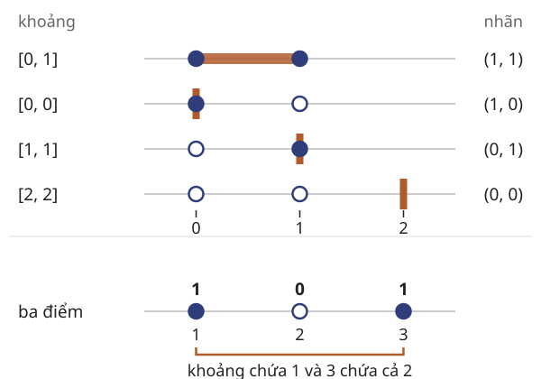
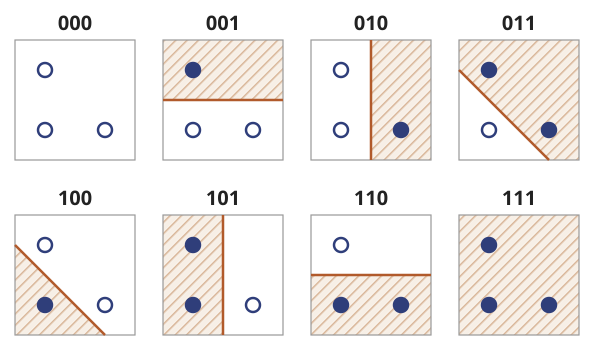
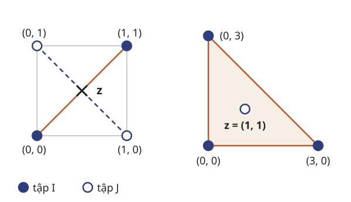
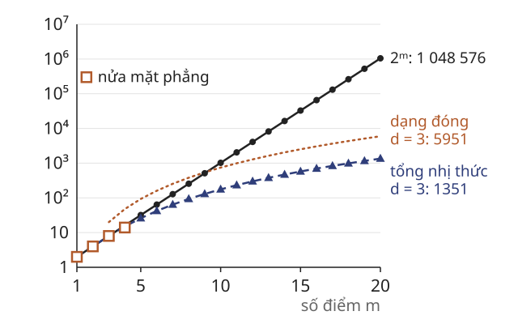
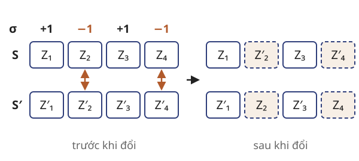
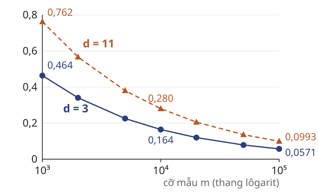
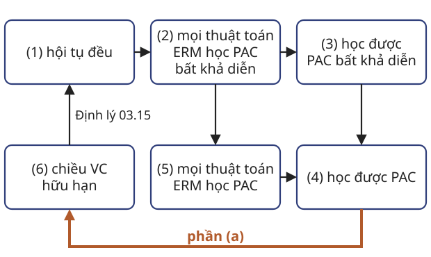

Chiều VC và hàm phân lớp tuyến tính
Bài 03
Trên lớp có chiều VC hữu hạn, số cách gán nhãn tăng theo đa thức của số điểm; dưới một điều kiện đo được, lớp học được với cỡ mẫu theo chiều VC thay cho lôgarit của số giả thuyết.
Lý thuyết học thống kê · Năm học 2026–2027, học kỳ 1
Khoa Công nghệ thông tin, Trường Đại học Công nghệ, ĐHQGHN
Bài 02 cho cỡ mẫu đủ theo lôgarit của số giả thuyết, nên không áp dụng được cho lớp hàm ngưỡng trên đường thẳng thực hay lớp hàm phân lớp tuyến tính, hai lớp có vô số phần tử. Số cách gán nhãn mà lớp tạo ra trên một tập điểm hữu hạn đo độ phong phú của lớp; khi chiều VC hữu hạn, số này tăng theo đa thức của số điểm. Một tập thứ hai, chỉ dùng trong chứng minh, cho phép thay số giả thuyết bằng số cách gán nhãn. Điều kiện đo được là giả thiết (M) của bài.
Nguồn: ghi chú Bài 03, đoạn mở đầu; Bổ đề 03.12; Định lý 03.15, 03.17; §9.
Tiên quyết và quy ước
Tối thiểu hóa rủi ro thực nghiệm (empirical risk minimization, ERM).
Nhắc lại: học xấp xỉ với xác suất cao (probably approximately correct, PAC) và học PAC bất khả diễn.
Nhắc lại: bất đẳng thức hợp (union bound), Chebyshev, Hoeffding.
Định lý 02.14: quan sát độc lập cùng phân bố, hàm lỗi đo được, trong $[0,1]$, $K$ hàm chọn trước:
$$\forall D:\ \Pr_{S\sim D^m}\Big[\sup_{h\in\mathcal H}\lvert L_S(h)-L_D(h)\rvert\le r_m=\sqrt{\ln(2K/\delta)/(2m)}\Big]\ge1-\delta.$$
Ba công cụ của Bài 02: bất đẳng thức hợp (Bổ đề 02.12), bất đẳng thức Chebyshev (Bổ đề 02.3) và bất đẳng thức Hoeffding (Định lý 02.7). Với $V_1,\ldots,V_m$ độc lập, $V_i\in[a,b]$, bất đẳng thức Hoeffding chặn xác suất trung bình lệch kì vọng ít nhất $\epsilon$ bởi $2e^{-2m\epsilon^2/(b-a)^2}$. Giả thiết của Định lý 02.14 là (T1)–(T4) của Bài 02. Học PAC và học PAC bất khả diễn là Định nghĩa 01.18 và 01.25; học PAC bất khả diễn so $L_D(A(S))$ với $\inf_hL_D(h)$. Câu hỏi ôn nhanh: $\sum_{j\le2}\binom5j=16$, bằng nửa $2^5=32$; $w=(2,2)$, $b=-1$ cho cách gán nhãn $(0,1,1)$ của $(0,0)$, $(1,0)$, $(0,1)$; với biến độc lập trong $[-1,1]$ có kì vọng $0$, Định lý 02.7 cho $2e^{-m\epsilon^2/2}$, vì miền dài $2$. Từ đại số tuyến tính: $p+1$ véc-tơ trong $\mathbb R^p$ phụ thuộc tuyến tính.
Nguồn: ghi chú Bài 03, Kiến thức tiên quyết, Câu hỏi ôn nhanh; ghi chú Bài 02, Định lý 02.14.
Mục tiêu
Tính chiều VC của lớp hàm ngưỡng, khoảng, nửa không gian bằng cận dưới, cận trên.
Tính hàm tăng trưởng, chặn bằng đa thức của số điểm, so với số mọi cách gán nhãn.
Trình bày năm bước chứng minh hội tụ đều.
Tính cận độ lệch đều, cỡ mẫu đủ cho ERM, so với lớp rời rạc hóa.
Phát biểu định lý cơ bản; dựng phản ví dụ khi chiều VC vô hạn, lớp chọn theo tập huấn luyện.
Mục tiêu 2 nói về lớp có chiều VC hữu hạn: hàm tăng trưởng bị chặn bởi một đa thức bậc bằng chiều VC, so với $2^m$ cách gán nhãn của $m$ điểm. Mục tiêu 4 gồm cận cho độ lệch đều giữa rủi ro thực nghiệm và rủi ro kì vọng, rồi cỡ mẫu cho rủi ro vượt mức của ERM. Mục tiêu 5 gồm ba phản ví dụ: một lớp có chiều VC vô hạn, một lớp lập sau khi xem tập huấn luyện, và một lớp một tham số có chiều VC vô hạn, cho thấy không thể thay chiều VC bằng số tham số.
Nguồn: ghi chú Bài 03, Mục tiêu học tập, §10.
Vấn đề trung tâm
Câu hỏi: đại lượng nào của lớp vô hạn thay cho lôgarit của số giả thuyết trong cận cỡ mẫu?
Chiều VC là số điểm lớn nhất mà lớp gán nhãn tùy ý được: $1$ cho lớp hàm ngưỡng, $2$ cho lớp khoảng, dù hai lớp vô hạn.
Hàm phân lớp tuyến tính afin trên $p$ chỉ số đo có chiều VC $p+1$; số tham số không thay được chiều VC.
Trên $m$ điểm, lớp có chiều VC $d$ cho nhiều nhất $(em/d)^d$ cách gán nhãn khi $1\le d\le m$.
Lôgarit của số cách gán nhãn trên $2m$ điểm thay cho lôgarit của số giả thuyết, nên độ lệch đều có cỡ $\sqrt{d\ln m/m}$.
Cỡ mẫu đủ cho ERM tăng theo chiều VC; dưới (M), một lớp học được khi và chỉ khi chiều VC hữu hạn.
Nguồn: ghi chú Bài 03, đoạn mở đầu, §4–§9.
Ví dụ: hai câu hỏi về cỡ mẫu
Hàm ngưỡng (threshold) $h_t(x)=\mathbb 1[x\ge t]$, $t\in\mathbb R$: vô số hàm; trên năm mức đo $\{1,\ldots,5\}$, chỉ sáu hàm khác nhau.
Hàm phân lớp tuyến tính (linear classifier) trên $p=10$ chỉ số đo: $h_{w,b}(x)=\mathbb 1[\langle w,x\rangle+b\ge0]$, $w\in\mathbb R^{10}$, $b\in\mathbb R$.
Với mọi phân bố, xác suất $\ge0{,}95$: rủi ro vượt mức (excess risk) của mọi nghiệm ERM $\le0{,}1.$
Câu hỏi: cần bao nhiêu quan sát cho mỗi lớp, và cho hai chỉ số đo?
Cả hai lớp có vô số phần tử, nên bán kính $r_m$ của Định lý 02.14 không xác định. Đếm số tham số thay cho lôgarit của số giả thuyết không dùng được: lớp các hàm $x\mapsto\mathbb 1[\sin(\theta x)>0]$, $\theta\in\mathbb R$, cũng chỉ có một tham số nhưng nhận được mọi tổ hợp nhãn trên những tập điểm lớn tùy ý. Đại lượng cần tìm đếm số tổ hợp nhãn mà lớp tạo ra trên các tập điểm hữu hạn. Sáu hàm trên năm mức đo là sáu hàm ngưỡng của ví dụ sàng lọc Bài 01, mà Bài 02 dùng với $K=6$. Rủi ro vượt mức của $\hat h$ là $L_D(\hat h)-\inf_hL_D(h)$; Hệ quả 02.16 chặn nó bởi $2r_m$ trên lớp hữu hạn.
Nguồn: ghi chú Bài 03, Câu hỏi mở đầu; §3 (khối ứng dụng); ghi chú Bài 02, Hệ quả 02.16.
2. Tách trọn vẹn và chiều VCLớp vô hạn được đo bằng số điểm lớn nhất mà lớp gán nhãn tùy ý được; với lớp hàm ngưỡng, số đó là một.
thu hẹp · cách gán nhãn · tách trọn vẹn · chiều VC · cận dưới và cận trên
Cỡ mẫu của Bài 02 tăng theo lôgarit của số giả thuyết và chỉ dùng được cho lớp hữu hạn. Rủi ro thực nghiệm của một hàm chỉ phụ thuộc giá trị của hàm tại các đầu vào của tập huấn luyện, nên ta đếm các véc-tơ nhãn mà lớp tạo ra trên một tập điểm thay cho việc đếm hàm. Từ số đếm đó có chiều VC, tính được bằng hai chiều lập luận: một tập bị tách trọn vẹn cho cận dưới, và mọi tập lớn hơn có một cách gán nhãn bị thiếu cho cận trên.
Nguồn: ghi chú Bài 03, §1–§4.
Thiết lập bài toán
$Z=(X,Y)\in\mathcal X\times\{0,1\}$, $S\sim D^m$; hàm lỗi 0–1 (0–1 loss); lớp giả thuyết (hypothesis class) $\mathcal H$ có thể vô hạn.
Giả thiết: (T1) $Z_1,\ldots,Z_m\sim D$ độc lập; (T5) $\mathcal H$ chọn trước khi lấy mẫu; (M) điều kiện đo được.
(M): mỗi $h\in\mathcal H$ là giới hạn từng điểm (pointwise limit) của dãy trong lớp con đếm được (countable subclass) $\mathcal H_0$.
Độ lệch đều (uniform deviation) $\sup_{h}\lvert L_S(h)-L_D(h)\rvert$; rủi ro vượt mức $L_D(\hat h)-\inf_{h}L_D(h)$ của nghiệm ERM $\hat h$.
$\mathcal X$ có một σ-đại số (σ-algebra), σ-đại số Borel trên $\mathbb R^p$ trong các ví dụ; $D$ cố định nhưng chưa biết. (T4) của Bài 02 là (T5) cộng điều kiện lớp hữu hạn. Đối tượng so sánh là $\inf_hL_D(h)$, vì trên lớp vô hạn giá trị nhỏ nhất có thể không đạt (Nhận xét 01.17). Độ lệch đều là cận trên đúng của vô hạn biến ngẫu nhiên; dưới (M), nó bằng cận trên đúng trên $\mathcal H_0$, vì $L_S(h_k)=L_S(h)$ khi $k$ đủ lớn và $L_D(h_k)\to L_D(h)$ theo định lý hội tụ bị chặn, nên đo được. Lớp hàm ngưỡng, lớp khoảng và lớp nửa không gian afin thỏa (M) với lớp con có tham số hữu tỉ; lớp hữu hạn thỏa (M) với $\mathcal H_0=\mathcal H$ (Nhận xét 03.14).
Nguồn: ghi chú Bài 03, §1, §2, §7 (đoạn về (M)), Nhận xét 03.14.
Cách gán nhãn và thu hẹp của một lớp
$\mathcal H_{\mathrm{thr}}=\{h_t:t\in\mathbb R\}$, trên $x_1<\cdots<x_m$, véc-tơ $(h_t(x_i))_{i\le m}$ chỉ phụ thuộc $\lvert\{i:x_i<t\}\rvert$: có $m+1$ véc-tơ.
Định nghĩa 03.1. Mỗi $y\in\{0,1\}^k$ là một cách gán nhãn (labeling) của $C=(x_1,\ldots,x_k)$.
Thu hẹp (restriction) $\mathcal H_C=\{(h(x_1),\ldots,h(x_k)):h\in\mathcal H\}$ gồm các cách gán nhãn thực hiện được (realized).
$C=(1,\ldots,5)$: $\mathcal H_C$ gồm $11111$, $01111$, $00111$, $00011$, $00001$, $00000$; $6$ trong $2^5=32$ cách.
Lưu ý: $L_S(h)$ chỉ phụ thuộc véc-tơ của $h$ trên $S$, nhưng tập véc-tơ đó phụ thuộc $S$.
Lớp $\mathcal H_{\mathrm{thr}}$ vô hạn: với $t<t'$, $h_t$ và $h_{t'}$ khác nhau đúng trên $[t,t')$. Sáu véc-tơ là giá trị của sáu hàm $h_1,\ldots,h_6$ của Ví dụ 01.1 trên năm mức đo: lớp sáu hàm ngưỡng mà Bài 02 dùng với $K=6$ là thu hẹp của một lớp vô hạn lên năm điểm. Thu hẹp chỉ phụ thuộc lớp và bộ điểm, và $\lvert\mathcal H_C\rvert\le\min\{\lvert\mathcal H\rvert,2^k\}$. Rủi ro thực nghiệm $L_S(h_t)$ nhận nhiều nhất $m+1$ giá trị khi $t$ chạy trên $\mathbb R$; vì tập $m+1$ véc-tơ đổi theo tập huấn luyện, không thể thay $K$ bằng $m+1$ trong Định lý 02.14. Một cách gán nhãn có thể không thực hiện được: với $C=(1,2)$, cách $(1,0)$ đòi $1\ge t$ và $2<t$.
Nguồn: ghi chú Bài 03, §3 (Ví dụ 03.1), §4 (Định nghĩa 03.1, Ví dụ 03.2).
Tập bị tách trọn vẹn và chiều VC
Lớp thực hiện được mọi cách gán nhãn của $C$ thì khớp được mọi nhãn trên $C$.
Định nghĩa 03.2. $\mathcal H$ tách trọn vẹn (shatters) $C$, $\lvert C\rvert=k$, nếu $\lvert\mathcal H_C\rvert=2^k$.
Định nghĩa 03.3. Chiều Vapnik–Chervonenkis (VC dimension) $d=\operatorname{VCdim}(\mathcal H)$: số phần tử lớn nhất của một tập bị tách trọn vẹn, hoặc $\infty$.
Ví dụ. $\mathcal H_{\mathrm{thr}}$ tách trọn vẹn $\{0\}$ ($h_0(0)=1$, $h_1(0)=0$), không tách trọn vẹn $\{1,2\}$.
Khớp được mọi nhãn nghĩa là với mọi nhãn quan sát trên $C$, lớp có một giả thuyết với rủi ro thực nghiệm $0$ trên $C$. Quy ước: tập rỗng bị mọi lớp khác rỗng tách trọn vẹn, nên $d\ge0$; $d=0$ khi và chỉ khi mọi hàm của lớp trùng nhau trên $\mathcal X$. Chiều VC bằng $\infty$ khi với mọi $k$ có một tập $k$ phần tử bị tách trọn vẹn. Tách trọn vẹn là tính chất của cặp lớp và tập điểm, không có phân bố hay tập huấn luyện; chiều VC không phụ thuộc $D$, $m$ hay cách tham số hóa lớp. Mọi tập con của một tập bị tách trọn vẹn cũng bị tách trọn vẹn. Một lớp hữu hạn tách trọn vẹn một tập $d$ phần tử thì có ít nhất $2^d$ hàm, nên $d\le\log_2\lvert\mathcal H\rvert$; với lớp sáu hàm ngưỡng, $\log_26\approx2{,}585$, nên $d\le2$.
Nguồn: ghi chú Bài 03, §4, Định nghĩa 03.2, 03.3 và các đoạn sau.
Cận dưới và cận trên cho chiều VC
Kỹ thuật. Cận dưới $d\ge k$: chỉ ra một tập $k$ phần tử bị tách trọn vẹn.
Cận trên $d\le k$: mọi tập $k+1$ phần tử, không chỉ một, có cách gán nhãn không thực hiện được (Nhận xét 03.4).
Dùng khi tính chiều VC của một lớp cụ thể.
Cận trên chỉ cần xét tập $k+1$ phần tử: một tập lớn hơn bị tách trọn vẹn sẽ chứa một tập con $k+1$ phần tử bị tách trọn vẹn, theo tính chất tập con. Hai lỗi đối xứng: một hình vẽ tập bị tách trọn vẹn chỉ là nhân chứng cho cận dưới; một tập không bị tách trọn vẹn không cho cận trên. Kỹ thuật này dùng cho lớp hàm ngưỡng, lớp khoảng và lớp nửa không gian trong bài, và cho mọi bài tập tính chiều VC.
Nguồn: ghi chú Bài 03, Nhận xét 03.4.
Chiều VC của lớp hàm ngưỡng và lớp khoảng

Trực quan. $h_t$ không giảm; tập nhãn $1$ của $h_{u,v}$ là một khoảng: nhãn phải khớp thứ tự trên đường thẳng.
Mệnh đề 03.5. Giả thiết: $\mathcal H_{\mathrm{thr}}$ trên $\mathbb R$, hoặc $\{h_t:t=1,\ldots,6\}$ trên $\{1,\ldots,5\}$. Bảo đảm: tất định, $d=1$.
Mệnh đề 03.6. Giả thiết: lớp khoảng đóng (closed interval) $\mathcal H_{\mathrm{int}}$ trên $\mathbb R$, $h_{u,v}=\mathbb 1[u\le x\le v]$, $u\le v$. Bảo đảm: tất định, $d=2$.
Hai mệnh đề không có phân bố hay tập huấn luyện ngẫu nhiên; ở Mệnh đề 03.5, chiều VC bằng $1$ cho cả lớp vô hạn lẫn lớp sáu hàm. Lớp hàm ngưỡng có vô số phần tử, nên lôgarit của số giả thuyết không cho cận cỡ mẫu; lớp chỉ gán nhãn tùy ý được các tập một điểm. Đọc hình: phần trên là hai điểm $0$, $1$ với bốn khoảng $[0,1]$, $[0,0]$, $[1,1]$, $[2,2]$, mỗi khoảng thực hiện một cách gán nhãn; khoảng $[2,2]$ nằm ngoài hai điểm và thay cho hàm hằng $0$, hàm không thuộc lớp. Phần dưới là ba điểm với cách gán nhãn $(1,0,1)$: mọi khoảng chứa điểm đầu và điểm cuối thì chứa điểm giữa.
Nguồn: ghi chú Bài 03, §4, Mệnh đề 03.5, 03.6.
Ý tưởng chứng minh: chiều VC trên đường thẳng
Cận dưới: $\{0\}$ bị $\mathcal H_{\mathrm{thr}}$ tách trọn vẹn; $\{0,1\}$ bị $\mathcal H_{\mathrm{int}}$ tách trọn vẹn, nhờ $[0,1]$, $[0,0]$, $[1,1]$, $[2,2]$.
Hàm ngưỡng, mọi $x_1<x_2$: cách $(1,0)$ đòi $x_2<t\le x_1$, vô lý.
Khoảng, mọi $x_1<x_2<x_3$: cách $(1,0,1)$ đòi $u\le x_1$, $x_3\le v$, nên $h_{u,v}(x_2)=1$.
Kỹ thuật. Cận trên dùng thứ tự của các điểm trên đường thẳng.
Kết luận: hai lớp cùng lực lượng (cardinality) với $\mathbb R$ nhưng khác chiều VC.
Lộ trình theo kỹ thuật cận dưới và cận trên: một tập bị tách trọn vẹn cho cận dưới, một cách gán nhãn không thực hiện được trên mọi tập lớn hơn cho cận trên. Ở bước 1, bốn khoảng là nghiệm tường minh và chỉ cho cận dưới; với lớp sáu hàm, $h_1(1)=1$ và $h_2(1)=0$ nên $\{1\}$ bị tách trọn vẹn. Tính chất then chốt của hàm ngưỡng là tính không giảm: mọi điểm bên phải một điểm nhãn $1$ cũng nhãn $1$. Lập luận ở bước 2 đúng với mọi $t\in\mathbb R$, nên đúng cho cả lớp vô hạn và lớp sáu hàm. Tính chất then chốt của lớp khoảng là tính lồi của tập nhãn $1$; bước 3 đúng cho mọi bộ ba điểm, nên cho cận trên. Chiều VC phân biệt được hai lớp vô hạn mà số phần tử không phân biệt được.
Nguồn: ghi chú Bài 03, chứng minh Mệnh đề 03.5, 03.6; đoạn cuối §4.
Bài tập: hai lời giải cho lớp hợp hai khoảng
$\mathcal H_{2\mathrm{int}}$: hợp hai khoảng đóng, $x\mapsto\mathbb 1[x\in I_1\cup I_2]$.
Thứ nhất: $16$ cách của $\{1,2,3,4\}$ thực hiện được, nên $d=4$.
Thứ hai: $(1,0,1,0,1)$ của $\{1,\ldots,5\}$ không thực hiện được, nên $d\le4$.
Câu hỏi: theo Nhận xét 03.4, mỗi lời giải thiếu phần nào?
Lời giải: thứ nhất thiếu cận trên cho mọi tập năm điểm.
Thứ hai xét một tập năm điểm nên không cho cận trên, và thiếu cận dưới.
Lời giải đầy đủ của phần (b): cận dưới dùng $\{1,2,3,4\}$, vì trong một cách gán nhãn của bốn điểm các nhãn $1$ tạo thành nhiều nhất hai khối liên tiếp; mỗi khối $\{i,\ldots,i'\}$ được thực hiện bởi khoảng $[i,i']$, khoảng không dùng đến đặt là $[10,10]$, và cách toàn $0$ dùng hai khoảng $[10,10]$. Cận trên dùng năm điểm bất kì $x_1<\cdots<x_5$ và cách gán nhãn $(1,0,1,0,1)$: ba điểm $x_1$, $x_3$, $x_5$ nằm trong hai khoảng, nên theo nguyên lý chuồng bồ câu (pigeonhole principle) hai trong ba điểm nằm trong cùng một khoảng, và khoảng đó chứa điểm nhãn $0$ ở giữa. Lập luận này chỉ dùng thứ tự của năm điểm, nên đúng cho mọi tập năm điểm.
Nguồn: tệp bài tập, Bài tập 03.2(b), (c) và lời giải; ghi chú Bài 03, Nhận xét 03.4.
3. Nửa không gian và hàm phân lớp tuyến tínhHàm phân lớp tuyến tính trên mười chỉ số đo gán nhãn tùy ý được mười một điểm, không được mười hai điểm.
nửa không gian · đơn hình · phân hoạch Radon · số tham số
Hai chứng minh trên đường thẳng dùng thứ tự của các điểm cho cận trên. Lớp hàm phân lớp tuyến tính xác định trên $\mathbb R^p$, nơi không có thứ tự như vậy; công cụ thay thế là một kết quả hình học về bao lồi, định lý Radon. Kết quả: chiều VC bằng số chỉ số đo cộng một cho lớp có hệ số tự do. Với các lớp khác, chiều VC có thể khác số tham số.
Nguồn: ghi chú Bài 03, §5.
Nửa không gian afin và nửa không gian thuần nhất
Trong $\mathbb R^p$ không có thứ tự như trên đường thẳng; cận trên cần một công cụ hình học.
Định nghĩa 03.7. Với $p\ge1$, $w\in\mathbb R^p$, $b\in\mathbb R$: $h_{w,b}(x)=\mathbb 1[\langle w,x\rangle+b\ge0]$.
Nửa không gian afin (affine halfspace) $\mathcal H^p_{\mathrm{aff}}=\{h_{w,b}\}$; nửa không gian thuần nhất (homogeneous halfspace) $\mathcal H^p_{\mathrm{hom}}=\{h_{w,0}\}$, không có hệ số tự do.
Điểm trên siêu phẳng (hyperplane) $\langle w,x\rangle+b=0$ nhận nhãn $1$; $w=0$ cho hàm hằng.
Lớp $\mathcal H^p_{\mathrm{aff}}$ còn gọi là lớp hàm phân lớp tuyến tính afin. Với $w=0$, $h_{0,b}$ là hằng $1$ khi $b\ge0$ và hằng $0$ khi $b<0$. Quy ước "$\ge0$" đặt siêu phẳng vào phía nhãn $1$; quy ước này được dùng ở cận trên của chứng minh. Với $p=1$, lớp $\mathcal H^1_{\mathrm{aff}}$ gồm các hàm $\mathbb 1[x\ge t]$ (khi $w>0$), $\mathbb 1[x\le t]$ (khi $w<0$) và hai hàm hằng. Lớp hàm phân lớp tuyến tính trên mười chỉ số đo của câu hỏi thực hành là $\mathcal H^{10}_{\mathrm{aff}}$; với hai chỉ số đo là $\mathcal H^2_{\mathrm{aff}}$, lớp các nửa mặt phẳng.
Nguồn: ghi chú Bài 03, §5, Định nghĩa 03.7 và hai đoạn sau.
Ví dụ: nửa mặt phẳng trên ba điểm

Lớp $\mathcal H^2_{\mathrm{aff}}$; ba điểm $(0,0)$, $(1,0)$, $(0,1)$.
Cách gán nhãn $(y_0,y_1,y_2)$; $b=2y_0-1$, $w_i=2y_i-1-b$.
Khi đó $\langle w,x\rangle+b=2y-1$ tại mỗi điểm: cả tám cách thực hiện được.
Ba điểm thẳng hàng $(0,0)$, $(1,0)$, $(2,0)$: cách $(1,0,1)$ không thực hiện được.
Lưu ý: một tập không bị tách trọn vẹn không cho cận trên (Nhận xét 03.4).
Ba điểm là các đỉnh của một đơn hình trong mặt phẳng, nên tập này bị tách trọn vẹn. Công thức cho $\langle w,0\rangle+b=2y_0-1$ và $\langle w,\mathbf e_i\rangle+b=w_i+b=2y_i-1$; số $2y-1$ bằng $1$ khi $y=1$ và $-1$ khi $y=0$. Chẳng hạn $(1,0,1)$ cho $b=1$, $w=(-2,0)$; cách $(0,1,1)$ cho $b=-1$, $w=(2,2)$, lời giải của câu ôn nhanh 2. Đọc hình: tám ô nhỏ, mỗi ô một cách gán nhãn theo thứ tự gốc, $(1,0)$, $(0,1)$; điểm nhãn $1$ tô đặc, điểm nhãn $0$ rỗng, đường thẳng là $\langle w,x\rangle+b=0$ theo công thức, phía nhãn $1$ tô gạch; hai cách hằng không có đường thẳng. Trên đường thẳng chứa ba điểm thẳng hàng, mỗi $h_{w,b}$ là một nửa đường thẳng hoặc một hàm hằng, nên $(1,0,1)$ không thực hiện được. Lỗi này giống lời giải thứ hai của bài tập về lớp hợp hai khoảng.
Nguồn: ghi chú Bài 03, Ví dụ 03.3, Bước 1–2; Câu hỏi ôn nhanh 2.
Phân hoạch Radon
Nhắc lại: bao lồi (convex hull) $\operatorname{conv}$ gồm mọi tổ hợp lồi (convex combination) $\sum\lambda_ix_i$, $\lambda_i\ge0$, $\sum\lambda_i=1$.

Trực quan. Hai đường chéo hình vuông cắt nhau.
Bổ đề 03.8 (phân hoạch Radon, Radon partition). Giả thiết: $p\ge1$; $x_1,\ldots,x_{p+2}\in\mathbb R^p.$ Bảo đảm: có $I$, $J$ khác rỗng, rời nhau, phủ $\{1,\ldots,p+2\}$, và $z\in\operatorname{conv}\{x_i\}_I\cap\operatorname{conv}\{x_j\}_J.$
Chứng minh. $\sum_ia_ix_i=0=\sum_ia_i$ có nghiệm $a\ne0$; $I=\{i:a_i>0\}$; chia cho $\sum_Ia_i$ được $z$.
Hai đường chéo cắt nhau tại $(\tfrac12,\tfrac12)$: bốn đỉnh chia thành hai cặp có bao lồi giao nhau. Kết quả còn gọi là định lý Radon (Radon's theorem). Trong chứng minh, hệ có $p+1$ phương trình và $p+2$ ẩn $a_i$; $J=\{j:a_j\le0\}$; vì $a\ne0$ và tổng các hệ số bằng $0$, nghiệm có cả hệ số dương lẫn hệ số âm, nên hai tập khác rỗng. Chia cho $\alpha=\sum_{i\in I}a_i$ được hai tổ hợp lồi của cùng điểm $z$. Đọc hình: bên trái là hình vuông với hai đường chéo và điểm $z=(\tfrac12,\tfrac12)$, tập $I$ là hai đỉnh tô đặc; bên phải là tam giác $(0,0)$, $(3,0)$, $(0,3)$ với điểm $(1,1)$ bên trong, $J=\{(1,1)\}$.
Nguồn: ghi chú Bài 03, Kiến thức tiên quyết; §5, Bổ đề 03.8 và chứng minh; Phụ lục A.
Chiều VC của lớp nửa không gian
Trực quan. Tại $p+1$ đỉnh của đơn hình (simplex), ma trận các hàng $(x_i^\top,1)$ khả nghịch: $g=\langle w,x\rangle+b$ có dấu tùy ý.
Bỏ $b$: gốc luôn nhận nhãn $1$, nên tập đỉnh có gốc, như $\{0,\mathbf e_1,\ldots,\mathbf e_p\}$, không còn bị tách trọn vẹn.
Mệnh đề 03.9. Giả thiết: $p\ge1$; hai lớp $\mathcal H^p_{\mathrm{aff}}$, $\mathcal H^p_{\mathrm{hom}}$.
Bảo đảm: tất định, theo $p$: (a) $\operatorname{VCdim}(\mathcal H^p_{\mathrm{aff}})=p+1$; (b) $\operatorname{VCdim}(\mathcal H^p_{\mathrm{hom}})=p$.
Mười chỉ số đo: $\mathcal H^{10}_{\mathrm{aff}}$ có $d=11$; hai chỉ số đo: $\mathcal H^2_{\mathrm{aff}}$ có $d=3$.
Một đơn hình là bao lồi của $p+1$ điểm độc lập afin (affinely independent), tức các hiệu $x_1-x_0,\ldots,x_p-x_0$ độc lập tuyến tính; trong mặt phẳng là một tam giác. Ma trận khả nghịch cho phép chọn $(w,b)$ để $g(x_i)=2y_i-1$ tại mọi đỉnh. Đẳng thức $d=p+1$ là kết quả riêng của lớp này, không suy ra từ số tham số (Nhận xét 03.10). Lớp thuần nhất luôn gán nhãn $1$ cho gốc, nên tập $\{0,\mathbf e_1,\ldots,\mathbf e_p\}$ của cận dưới (a) không dùng được cho (b); cận trên $d\le p$ dùng phụ thuộc tuyến tính của $p+1$ véc-tơ (Phụ lục A). Hai con số $11$ và $3$ là chiều VC của hai lớp trong câu hỏi thực hành.
Nguồn: ghi chú Bài 03, §5, Mệnh đề 03.9 và chứng minh; Phụ lục A; Nhận xét 03.10.
Ý tưởng chứng minh: chiều VC của nửa không gian
Cận dưới (a): $0$ và véc-tơ đơn vị $\mathbf e_1,\ldots,\mathbf e_p$; $b=2y_0-1$, $w_i=2y_i-1-b$.
Cận trên (a): phân hoạch Radon $(I,J)$ của $p+2$ điểm; nhãn $1$ trên $I$, $0$ trên $J$; $g(x)=\langle w,x\rangle+b$.
Kỹ thuật. Hàm afin giữ tổ hợp lồi; với $z=\sum_{i\in I}\lambda_ix_i=\sum_{j\in J}\mu_jx_j$:
$$\begin{aligned}g(z)&=\textstyle\sum_{i\in I}\lambda_ig(x_i)\ge0,\\ g(z)&=\textstyle\sum_{j\in J}\mu_jg(x_j)<0.\end{aligned}$$
Dấu $<0$: theo quy ước $\ge0$, nhãn $0$ trên $J\ne\varnothing$ cho $g<0$ nghiêm ngặt.
Phần (b): cận dưới $\mathbf e_1,\ldots,\mathbf e_p$; cận trên tách chỉ số của $\sum_ia_ix_i=0$ theo dấu.
Lộ trình: cận dưới bằng nghiệm tường minh trên các đỉnh của đơn hình, cận trên bằng phân hoạch Radon. Bước 1 là công thức của ví dụ ba điểm, đúng cho mọi $p$; cùng lập luận đúng cho mọi $p+1$ điểm độc lập afin vì ma trận có các hàng $(x_i^\top,1)$ khả nghịch (Bài tập 03.3). Bước 2–3: các $\lambda_i$, $\mu_j$ không âm, mỗi họ có tổng $1$; nếu $h_{w,b}$ thực hiện cách gán nhãn thì $g(x_i)\ge0$ trên $I$ và $g(x_j)<0$ trên $J$, nên hai biểu diễn của $g(z)$ cho hai dấu trái nhau. Một tổ hợp lồi của các số âm, với ít nhất một số hạng, là số âm. Phần (b): cận dưới dùng $w=\sum_i(2y_i-1)\mathbf e_i$; cận trên lấy một quan hệ phụ thuộc tuyến tính $\sum_ia_ix_i=0$ của $p+1$ véc-tơ, gán nhãn $1$ cho chỉ số có $a_i>0$ và $0$ cho phần còn lại (Phụ lục A).
Nguồn: ghi chú Bài 03, chứng minh Mệnh đề 03.9; Phụ lục A; tệp bài tập, Bài tập 03.3.
Ví dụ: bốn điểm trong mặt phẳng
$\mathcal H^2_{\mathrm{aff}}$; hình vuông $(0,0)$, $(1,0)$, $(1,1)$, $(0,1)$: $16$ cách.
Tam giác $(0,0)$, $(3,0)$, $(0,3)$ và điểm $(1,1)=\tfrac13(0,0)+\tfrac13(3,0)+\tfrac13(0,3)$.
Hình vuông: cách "chéo" ($1$ tại $(0,0)$, $(1,1)$) và cách bù không thực hiện được; $z=(\tfrac12,\tfrac12)$ là giao hai đường chéo.
Thực hiện được $14=2+4+4+4$: hằng, một đỉnh, hai đỉnh kề, bù một đỉnh.
Tam giác: $1$ tại ba đỉnh, $0$ tại $(1,1)$: không thực hiện được.
Kết luận: cách thiếu do phân hoạch Radon chỉ ra (Bổ đề 03.8).
Với hình vuông, phân hoạch Radon là hai đường chéo; đổi vai $I$ và $J$ cho cách gán nhãn bù. Với tam giác, $J=\{(1,1)\}$ và $I$ là ba đỉnh. Hai cấu hình là hai bộ bốn điểm cụ thể; cận trên $d\le3$ đến từ Bổ đề 03.8 (phân hoạch Radon), đúng cho mọi bộ bốn điểm, qua bước 2 của chứng minh cận trên. Tách một đỉnh, hai đỉnh kề hoặc bù của một đỉnh là $4+4+4$ cách; hai hàm hằng là $2$ cách. Cách tách hai đỉnh kề dùng một đường song song với một cạnh.
Nguồn: ghi chú Bài 03, Ví dụ 03.3, Bước 3–4.
Số tham số và chiều VC
Nhận xét 03.10.
(i) $\mathcal H^p_{\mathrm{aff}}$: $p+1$ tham số $(w,b)$ và $d=p+1$.
(ii) $\mathcal H_{\sin}=\{x\mapsto\mathbb 1[\sin(\theta x)>0]:\theta\in\mathbb R\}$: một tham số; với mọi $k$, $\{2^{-1},\ldots,2^{-k}\}$ bị tách trọn vẹn, nên $d=\infty$.
(iii) Trên $\mathbb R$, $\{x\mapsto\mathbb 1[(w_1+\cdots+w_p)x\ge0]:w\in\mathbb R^p\}$: $p$ tham số, ba hàm, $d=1$.
Kết luận: chiều VC có thể lớn hơn hoặc nhỏ hơn số tham số.
Với $m>d$ điểm, cần đếm số cách gán nhãn mà lớp tạo ra.
Ở (iii), ba hàm là $\mathbb 1[x\ge0]$, $\mathbb 1[x\le0]$ và hằng $1$, theo dấu của $w_1+\cdots+w_p$; đây là $\mathcal H^1_{\mathrm{hom}}$ viết với $p$ tham số, nên $d=1$ theo Mệnh đề 03.9(b). Ở (ii), với $x_i=2^{-i}$ và cách gán nhãn $y$, tham số $\theta=\pi\big(1+\sum_{j=1}^k(1-y_j)2^j\big)$ thực hiện $y$; chẳng hạn $k=3$, $y=(1,0,1)$ cho $\theta=5\pi$, và $\sin(5\pi/2)=1$, $\sin(5\pi/4)<0$, $\sin(5\pi/8)>0$. Với nửa không gian afin, đẳng thức $d=p+1$ được chứng minh riêng cho lớp đó, không suy ra từ việc đếm tham số. Bài tập 03.5 đi qua công thức của $\theta$.
Nguồn: ghi chú Bài 03, Nhận xét 03.10 và đoạn sau; tệp bài tập, Bài tập 03.5(a), (b).
4. Hàm tăng trưởng và bổ đề Sauer–ShelahTrên nhiều điểm hơn chiều VC, số cách gán nhãn của lớp tăng như một đa thức của số điểm, thay cho hàm mũ.
hàm tăng trưởng · tổng nhị thức · quy nạp kép · công thức Pascal
Trên hơn $d$ điểm, chiều VC chỉ cho biết có cách gán nhãn bị thiếu; bất đẳng thức hợp cần biết còn lại bao nhiêu cách. Hàm tăng trưởng đếm số cách gán nhãn trong trường hợp xấu nhất, và bổ đề Sauer–Shelah chặn nó bằng một đa thức bậc $d$ của số điểm, thay cho $2^m$.
Nguồn: ghi chú Bài 03, §6.
Hàm tăng trưởng
Định lý 02.14 cộng $K$ biến cố hỏng; lớp vô hạn cần số cách gán nhãn xấu nhất.
Định nghĩa 03.11. Hàm tăng trưởng (growth function), lấy trên mọi bộ $m$ điểm, kể cả bộ có điểm lặp:
$$\Pi_{\mathcal H}(m)=\max_{C\in\mathcal X^m}\lvert\mathcal H_C\rvert.$$
$\Pi_{\mathcal H}(m)$ tất định, và trên mọi tập huấn luyện, $\lvert\mathcal H_{(X_1,\ldots,X_m)}\rvert\le\Pi_{\mathcal H}(m)\le\min\{2^m,\lvert\mathcal H\rvert\}$.
$\Pi_{\mathcal H}(m)=2^m$ khi và chỉ khi $m\le d$.
Ví dụ 03.4. $\Pi_{\mathcal H_{\mathrm{thr}}}(m)=m+1$; $\Pi_{\mathcal H_{\mathrm{int}}}(m)=\binom{m+1}2+1$; tại $m=5$: $6$ và $16$, so với $2^5=32$.
Số $\lvert\mathcal H_{(X_1,\ldots,X_m)}\rvert$ là ngẫu nhiên; giá trị lớn nhất lấy trên mọi bộ điểm nên $\Pi_{\mathcal H}(m)$ là một số. Vì bộ điểm được phép lặp, $\Pi_{\mathcal H}(m)$ không giảm theo $m$. Đẳng thức $\Pi_{\mathcal H}(m)=2^m$ khi $m\le d$: lấy $m$ điểm của một tập bị tách trọn vẹn; ngược lại, một bộ có điểm lặp cho nhiều nhất $2^{m-1}$ cách, và một bộ $m$ điểm phân biệt có đủ $2^m$ cách là một tập bị tách trọn vẹn. Với hàm ngưỡng trên $x_1<\cdots<x_m$, cách gán nhãn là một dãy $0$ rồi một dãy $1$. Với lớp khoảng, cách gán nhãn là toàn $0$ hoặc một khối liền các nhãn $1$ từ chỉ số $i$ đến $i'\ge i$: $\binom{m+1}2$ khối và cách toàn $0$. Số $16$ bằng $\sum_{j\le2}\binom5j$ của câu ôn nhanh 1. Bậc của hai đa thức trùng với chiều VC.
Nguồn: ghi chú Bài 03, §6, Định nghĩa 03.11, Ví dụ 03.4.
Bổ đề Sauer–Shelah
Trực quan. Thêm một điểm, các cách gán nhãn được nhân đôi tạo thành một tập có chiều VC $\le d-1$.
Bổ đề 03.12. Giả thiết: $\mathcal H\ne\varnothing$, $d<\infty$, $m\ge1$. Bảo đảm: tất định:
(a) $\Pi_{\mathcal H}(m)\le\sum_{j=0}^{d}\tbinom mj$, với $\tbinom mj=0$ khi $j>m$;
(b) nếu $1\le d\le m$: $\sum_{j=0}^{d}\tbinom mj\le(em/d)^d$.

Cơ chế là bước quy nạp: một cách gán nhãn của $m-1$ điểm đầu mở rộng thành hai cách của $m$ điểm khi và chỉ khi nó thuộc tập $Y_1$, và $Y_1$, coi như một lớp, có chiều VC không quá $d-1$. Bổ đề là hai bất đẳng thức tổ hợp, tất định; phần (a) phụ thuộc lớp chỉ qua $d$, không qua số phần tử. Đọc hình: trục ngang $m$ từ $1$ đến $20$, trục dọc thang lôgarit từ $1$ đến $10^7$; ba đường cho $2^m$, tổng nhị thức với $d=3$ và $(em/3)^3$ (từ $m=3$); bốn ô vuông là hàm tăng trưởng của lớp nửa mặt phẳng tại $m=1,\ldots,4$: $2;\ 4;\ 8;\ 14$. Đường $2^m$ là đường thẳng trên thang lôgarit, hai đường kia cong xuống; dạng đóng nằm trên $2^m$ khi $3\le m\le9$. Tại $m=20$, tổng nhị thức bằng $1351$ trong $2^{20}=1\,048\,576$. Khi $1\le d\le m$, phần (b) cho $\ln\Pi_{\mathcal H}(m)\le d\ln(em/d)$, chỉ tăng như $\ln m$, trong khi $\ln2^m=m\ln2$ tăng tuyến tính.
Nguồn: ghi chú Bài 03, §6, Bổ đề 03.12 và chứng minh; Ví dụ 03.5.
Ý tưởng chứng minh: bổ đề Sauer–Shelah, phần (a)
Cố định $C=(x_1,\ldots,x_m)$, $C'=(x_1,\ldots,x_{m-1})$; $Y_1$: các cách gán nhãn của $C'$ mở rộng được theo cả hai nhãn của $x_m$.
Đếm: $$\lvert\mathcal H_C\rvert=\lvert\mathcal H_{C'}\rvert+\lvert Y_1\rvert.$$
$Y_1$ tách trọn vẹn tập điểm $B\subseteq C'$ thì $\mathcal H$ tách trọn vẹn $B\cup\{x_m\}$; vậy chiều VC của $Y_1$ không quá $d-1$.
Quy nạp kép (double induction) theo $(m,d)$, rồi công thức Pascal (Pascal's rule) $\binom{m-1}j+\binom{m-1}{j-1}=\binom mj$.
Kỹ thuật. Tách theo nhãn của điểm cuối rồi quy nạp.
Lộ trình: quy nạp kép theo số điểm và chiều VC. Mỗi cách gán nhãn của $C'$ mở rộng thành một hoặc hai cách gán nhãn của $C$, và thành hai khi và chỉ khi nó thuộc $Y_1$; đó là đẳng thức đếm ở bước 2. Bước 3 là chỗ chiều VC giảm; $Y_1$ là một tập véc-tơ nhãn trên các điểm của $C'$, coi như một lớp, và "$Y_1$ tách trọn vẹn $B$" nghĩa là mọi cách gán nhãn của $B$ có trong $Y_1$. Khi đó mỗi cách gán nhãn của $B$ khớp một phần tử của $Y_1$, và cả hai nhãn của $x_m$ đi kèm được, nên $B\cup\{x_m\}$ bị tách trọn vẹn. Giả thiết quy nạp cho $\lvert\mathcal H_{C'}\rvert\le\sum_{j\le d}\binom{m-1}j$ và $\lvert Y_1\rvert\le\sum_{j\le d-1}\binom{m-1}j$; công thức Pascal cộng hai tổng thành $\sum_{j\le d}\binom mj$, rồi lấy giá trị lớn nhất trên các bộ $C$. Giả thiết quy nạp áp dụng cho mọi tập véc-tơ nhãn trên $m-1$ vị trí, không chỉ cho các thu hẹp của $\mathcal H$; trường hợp gốc $m=0$ hoặc $d=0$ và bộ có điểm lặp nằm ở Phụ lục B. Khi $x_m$ trùng một điểm trước nó, $Y_1=\varnothing$. Bài tập 03.6 cho một cách chứng minh khác bằng phép dồn.
Nguồn: ghi chú Bài 03, chứng minh Bổ đề 03.12, Bước 1–2; Phụ lục B; UML §6.5.1.
Ví dụ: tách theo điểm cuối cho lớp khoảng trên ba điểm
$\mathcal H_{\mathrm{int}}$ ($d=2$), $C=(1,2,3)$, $C'=(1,2)$.
$\mathcal H_C$: $000$, $100$, $010$, $001$, $110$, $011$, $111$; $7$ cách, thiếu $101$.
$\mathcal H_{C'}$: $00$, $10$, $01$, $11$; $Y_1$: $00$, $01$, $11$, vì $10$ chỉ mở rộng thành $100$.
$7=4+3$; $Y_1$ tách trọn vẹn từng vị trí, thiếu $10$: chiều VC của $Y_1$ bằng $1=d-1$.
$$4+3=\Big(\tbinom20+\tbinom21+\tbinom22\Big)+\Big(\tbinom20+\tbinom21\Big)=\tbinom30+\tbinom31+\tbinom32=7.$$
Các phần tử của $Y_1$ là $00$, mở rộng thành $000$ và $001$; $01$, thành $010$ và $011$; $11$, thành $110$ và $111$. Cách $10$ chỉ mở rộng thành $100$, vì $101$ không thực hiện được. $Y_1$ tách trọn vẹn vị trí $1$ (giá trị $0$, $0$, $1$) và vị trí $2$, nhưng không tách trọn vẹn cặp vị trí $\{1,2\}$. Dòng cuối là công thức Pascal ở bước quy nạp: cả hai cận đạt dấu bằng, nên bổ đề đạt dấu bằng tại $m=3$, khớp $\Pi_{\mathcal H_{\mathrm{int}}}(3)=7$. Với lớp hàm ngưỡng trên cùng ba điểm: $\mathcal H_C=\{000,001,011,111\}$, $\mathcal H_{C'}=\{00,01,11\}$, $Y_1=\{00\}$, và $4=3+1$, với $Y_1$ có chiều VC $0=d-1$.
Nguồn: ghi chú Bài 03, chứng minh Bổ đề 03.12, Bước 1–2; Mệnh đề 03.6; Ví dụ 03.4.
Ý tưởng chứng minh: dạng đóng của bổ đề Sauer–Shelah
Với $1\le d\le m$:
$$\sum_{j\le d}\tbinom mj\le\sum_{j\le d}\tbinom mj\big(\tfrac md\big)^{d-j}\le\big(\tfrac md\big)^d\big(1+\tfrac dm\big)^m\le\big(\tfrac md\big)^de^d.$$
$(m/d)^{d-j}\ge1$ khi $j\le d$, vì $m/d\ge1$.
Thêm các số hạng $d<j\le m$, rồi khai triển nhị thức; bước này cần $d\le m$.
$1+x\le e^x$ với $x=d/m$, nâng lên lũy thừa $m$.
Bỏ $d\le m$: với $m=1$, $d=3$, $(e/3)^3\approx0{,}744<2=\Pi_{\mathcal H}(1)$.
Lộ trình: nhân mỗi số hạng với một thừa số không nhỏ hơn $1$, thêm số hạng để được một khai triển nhị thức đầy đủ, rồi chặn bằng hàm mũ. Bất đẳng thức thứ hai gồm hai bước: rút $(m/d)^d$ ra ngoài được $\sum_{j\le d}\binom mj(d/m)^j$, rồi thêm các số hạng không âm với $d<j\le m$ được $(1+d/m)^m$. Khi $m<d$, tổng trong (a) bằng $2^m=\Pi_{\mathcal H}(m)$, và dạng đóng có thể nhỏ hơn giá trị này. Phần (b) cần $d\ge1$ để $(em/d)^d$ xác định.
Nguồn: ghi chú Bài 03, chứng minh Bổ đề 03.12, Bước 3 và hai đoạn sau.
Ví dụ: ba cách đếm cách gán nhãn
$\mathcal H_{\mathrm{thr}}$ ($d=1$), $\mathcal H_{\mathrm{int}}$ ($d=2$): Bổ đề 03.12(a) đạt dấu bằng.
$\mathcal H^2_{\mathrm{aff}}$ ($d=3$): $\Pi_{\mathcal H^2_{\mathrm{aff}}}(4)=14<15$, vì phân hoạch Radon loại hai cách.
$m$ tổng ($d=3$) $(em/3)^3$ $2^m$
$3$ $8$ $20{,}09$ $8$ $4$ $15$ $47{,}61$ $16$ $5$ $26$ $92{,}99$ $32$ $20$ $1351$ $5951{,}27$ $1\,048\,576$
Diễn giải: ba hàng đầu, dạng đóng còn lớn hơn $2^m$; tại $m=20$, tổng nhị thức nhỏ hơn gần ba bậc.
Bốn điểm có điểm lặp cho nhiều nhất $2^3=8$ cách; bốn điểm phân biệt có một phân hoạch Radon, và cả cách gán nhãn "$1$ trên $I$, $0$ trên $J$" lẫn cách bù đều không thực hiện được, nên $\Pi(4)\le14$, và hình vuông đạt $14$; đó là ô vuông cuối của hình ở trang bổ đề Sauer–Shelah. Tổng nhị thức với $d=3$ cho phép $15$, nên với lớp nửa mặt phẳng bổ đề không đạt dấu bằng. Với $d=1$, tổng nhị thức bằng $m+1$; với $d=2$, bằng $\binom{m+1}2+1$; đúng hai hàm tăng trưởng của Ví dụ 03.4. Dạng đóng lỏng hơn tổng nhị thức khi $m$ nhỏ.
Nguồn: ghi chú Bài 03, Ví dụ 03.5.
5. Hội tụ đều trên lớp có chiều VC hữu hạnTrên lớp có chiều VC hữu hạn, rủi ro thực nghiệm của mọi hàm gần rủi ro kì vọng với xác suất cao.
hội tụ đều · tập mẫu ảo · đổi chỗ · tập gộp · bán kính VC
Trên $m$ điểm, lớp có chiều VC $d$ cho nhiều nhất $(em/d)^d$ cách gán nhãn khi $1\le d\le m$. Để dùng số đếm này thay cho số giả thuyết trong chứng minh hội tụ đều của Bài 02, phải vượt hai trở ngại: rủi ro kì vọng không xác định bởi cách gán nhãn trên tập huấn luyện, và tập các cách gán nhãn phụ thuộc tập huấn luyện. Một tập thứ hai, chỉ dùng trong chứng minh, vượt qua cả hai. Kết quả là bán kính VC; quan sát độc lập (T1), lớp chọn trước (T5) và chiều VC hữu hạn không bỏ được, còn (M) bảo đảm độ lệch đều đo được.
Nguồn: ghi chú Bài 03, §7.
Tính chất hội tụ đều của một lớp
Nếu $d\ln(em/d)$ thay được $\ln K$ trong Định lý 02.14, độ lệch đều có cỡ $\sqrt{d\ln m/m}.$
Định nghĩa 03.13. $\mathcal H$ có tính chất hội tụ đều (uniform convergence property) nếu có $M:(0,1)^2\to\mathbb N$ sao cho
$$\Pr_{S\sim D^m}\Big[\sup_{h\in\mathcal H}\lvert L_S(h)-L_D(h)\rvert\le\epsilon\Big]\ge1-\delta$$
với mọi $\epsilon,\delta\in(0,1)$, mọi $D$, mọi $m\ge M(\epsilon,\delta)$; biến cố "$S$ là $\epsilon$-đại diện" (Định nghĩa 02.13) phải đo được.
Hàm cỡ mẫu hội tụ đều (uniform convergence sample size) $m^{UC}_{\mathcal H}(\epsilon,\delta)$ là cỡ mẫu nhỏ nhất như vậy.
Để biến ước lượng $\sqrt{d\ln m/m}$ thành một bảo đảm, cần biến cố "$S$ là $\epsilon$-đại diện" có xác suất ít nhất $1-\delta$ với mọi phân bố khi $m$ đủ lớn. Thứ tự lượng từ giống định nghĩa học PAC (Định nghĩa 01.18): $\exists M$ đứng trước $\forall D$, nên cỡ mẫu không phụ thuộc phân bố. Đây là tính chất của lớp; không có thuật toán nào trong định nghĩa. Chính xác hơn, $m^{UC}_{\mathcal H}(\epsilon,\delta)$ là số $m_0$ nhỏ nhất sao cho điều kiện đúng với mọi $D$ và mọi $m\ge m_0$, và bằng $\infty$ khi không có $m_0$ nào. Một lớp hữu hạn chọn trước khi lấy mẫu có tính chất này, với $m^{UC}_{\mathcal H}(\epsilon,\delta)\le\lceil\ln(2K/\delta)/(2\epsilon^2)\rceil$ theo Định lý 02.14(c).
Nguồn: ghi chú Bài 03, câu cuối §6; §7, Định nghĩa 03.13 và hai đoạn sau.
Ví dụ: lớp mọi hàm phân lớp đo được trên $[0,1]$
$\mathcal X=[0,1]$; $\mathcal M_{[0,1]}$: mọi hàm phân lớp đo được $[0,1]\to\{0,1\}$ (Ví dụ 01.8).
$D$: $X\sim U[0,1]$, $D(Y=1\mid X=x)=1$ với mọi $x$.
Chiều VC: với tập hữu hạn $C$ và tập $F_1\subseteq C$ các điểm nhãn $1$, $\mathbb 1_{F_1}$ thực hiện cách gán nhãn đó; $d=\infty$.
Với $F=\{X_1,\ldots,X_m\}$: $L_S(\mathbb 1_F)=0$, $L_D(\mathbb 1_F)=1$ (Mệnh đề 01.15); độ lệch đều bằng $1$ trên mọi tập huấn luyện.
Kết luận: với $\epsilon<1$, biến cố $\epsilon$-đại diện có xác suất $0<1-\delta$ với mọi $m$: không có hội tụ đều.
Hàm $\mathbb 1_{F_1}$ là hàm Borel vì $F_1$ hữu hạn, nên thuộc lớp. Hàm $\mathbb 1_F$ là hàm phân lớp ghi nhớ của Bài 01: nó khớp mọi quan sát của tập huấn luyện, nhưng một quan sát mới rơi vào $F$ với xác suất $0$. Tập các tập đại diện là tập rỗng, đo được, xác suất $0$, nên không hàm $M$ nào thỏa định nghĩa. Dưới phân bố này, lớp vẫn có nghiệm ERM tốt: hàm hằng $1$ có rủi ro thực nghiệm và rủi ro kì vọng bằng $0$ (Mệnh đề 01.15(c)); hội tụ đều hỏng vì nó đòi cận cho mọi hàm của lớp cùng lúc.
Nguồn: ghi chú Bài 03, Ví dụ 03.6; Ví dụ 01.8, Mệnh đề 01.15.
Bất đẳng thức hợp trên các cách gán nhãn của tập huấn luyện
Trên $S$, lớp chỉ cho $\lvert\mathcal H_{(X_1,\ldots,X_m)}\rvert\le\Pi_{\mathcal H}(m)$ cách gán nhãn.
Câu hỏi: có thể lấy bất đẳng thức hợp trên các cách này không?
(i) $L_D(h)$ không xác định bởi cách gán nhãn của $h$ trên $S$.
(ii) Các cách gán nhãn phụ thuộc $S$, trái (T5).
Tập mẫu ảo (ghost sample) $S'\sim D^m$ độc lập thay $L_D(h)$ bằng $L_{S'}(h)$: sửa (i).
Đổi chỗ ngẫu nhiên (swapping) $Z_i\leftrightarrow Z'_i$ khi biết $(S,S')$: sửa (ii).
Ở (i), hai hàm có cùng cách gán nhãn trên $S$ có thể có rủi ro kì vọng khác nhau, nên một cách gán nhãn không ứng với một biến cố hỏng duy nhất. Ở (ii), tập các cách gán nhãn là một lớp chọn theo tập huấn luyện. Lập luận bỏ qua hai trở ngại cho kết quả sai: với lớp $\mathcal M_{[0,1]}$ và phân bố của ví dụ trước, $\Pi(m)=2^m$, và cận $\sqrt{\ln(2\Pi(m)/\delta)/(2m)}$ bằng khoảng $0{,}590$ tại $m=1000$, $\delta=0{,}05$, trong khi độ lệch đều bằng $1$ trên mọi tập huấn luyện (Bài tập 03.4(d)). Sau khi thay $L_D(h)$ bằng $L_{S'}(h)$, mọi đại lượng chỉ phụ thuộc $h$ qua cách gán nhãn trên $2m$ điểm; phép thay cần lớp cố định đối với cả hai tập, tức (T5).
Nguồn: ghi chú Bài 03, §7, đoạn trước Định lý 03.15; chứng minh Định lý 03.15, Bước 3; tệp bài tập, Bài tập 03.4(d).
Hội tụ đều trên lớp có chiều VC hữu hạn
Trực quan. $d=0$: $\Pi_{\mathcal H}=1$, cận còn $\sqrt{8\ln(4/\delta)/m}$; $d=\infty$: cận $\ge3{,}33$, không cho thông tin.
Định lý 03.15. Giả thiết: (T1), $m\ge1$; hàm lỗi 0–1; $\mathcal H$ thỏa (T5), (M), chiều VC $d$; $\delta\in(0,1)$.
Bảo đảm: theo $S\sim D^m$, mọi $D$, với bán kính VC (VC radius) $\rho_m=\sqrt{8\ln(4\Pi_{\mathcal H}(2m)/\delta)/m}$:
(a) với xác suất ít nhất $1-\delta$, $\sup_{h\in\mathcal H}\lvert L_S(h)-L_D(h)\rvert\le\rho_m$;
(b) nếu $1\le d\le m$: $\rho_m\le\sqrt{\tfrac8m\big(d\ln\tfrac{2em}d+\ln\tfrac4\delta\big)}\le4\sqrt{\tfrac1m\big(d\ln\tfrac{em}d+\ln\tfrac2\delta\big)}$;
(c) nếu $1\le d<\infty$: hội tụ đều, $m^{UC}_{\mathcal H}(\epsilon,\delta)\le\big\lceil\tfrac{16}{\epsilon^2}\big(d\ln\tfrac{32}{\epsilon^2}+\ln\tfrac4\delta\big)\big\rceil$.
Hai trường hợp biên đọc ra từ (a). Khi $d=0$, mọi hàm của lớp trùng nhau, nên chỉ còn một giả thuyết. Khi $d=\infty$, $\Pi_{\mathcal H}(2m)=2^{2m}$, nên $\rho_m\ge\sqrt{16\ln2}\approx3{,}33$, lớn hơn độ lệch đều lớn nhất có thể là $1$. Bảo đảm với xác suất cao cho độ lệch giữa đại lượng thực nghiệm và đại lượng tổng thể, đồng thời cho mọi $h\in\mathcal H$, không phụ thuộc $D$. Khi $d\ge1$, cận giảm theo $m$ như $\sqrt{\ln m/m}$ và phụ thuộc $\delta$ qua $\ln(1/\delta)$. Bán kính $\rho_m=\rho_m(\mathcal H,\delta)$; các vế phải ở (a), (b) có thể thay bằng $\min\{1,\cdot\}$. So với Định lý 02.14, $\ln(2K/\delta)/(2m)$ thành $8\ln(4\Pi_{\mathcal H}(2m)/\delta)/m$.
Nguồn: ghi chú Bài 03, §7, Định lý 03.15 và đoạn sau.
Ý tưởng chứng minh: hội tụ đều theo chiều VC
$$\Pr\big[\sup_h\lvert L_D-L_S\rvert>\epsilon\big]\le2\Pr\big[\sup_h\lvert L_{S'}-L_S\rvert>\tfrac\epsilon2\big]\le4\Pi_{\mathcal H}(2m)e^{-m\epsilon^2/8}$$
Tập mẫu ảo $S'\sim D^m$ độc lập; Chebyshev, $\operatorname{Var}\le\tfrac14$ (hàm lỗi 0–1): hệ số $2$ khi $m\epsilon^2\ge2$; dùng (T1), (M).
Đổi chỗ $Z_i\leftrightarrow Z'_i$ theo dấu ngẫu nhiên (random signs), $\Pr(\sigma_i=\pm1)=\tfrac12$, độc lập; dùng (T1).
Biết $(S,S')$: $\le\Pi_{\mathcal H}(2m)$ cách trên tập gộp (combined sample); dùng (T5).
Hoeffding (số hạng trong $[-1,1]$) cho $2e^{-m\epsilon^2/8}$ mỗi cách; bất đẳng thức hợp.
Nhắc lại: đảo cận đuôi, vế phải $=\delta$ cho $\epsilon=\rho_m$; (b): Bổ đề 03.12 tại $2m$.
Lộ trình: bước 1–2 là đối xứng hóa (tập mẫu ảo, rồi đổi chỗ theo dấu ngẫu nhiên); sau đó đếm cách gán nhãn trên tập gộp, rồi Hoeffding và bất đẳng thức hợp. Bước 1: nếu một $h$ chọn theo $S$ có $\lvert L_S(h)-L_D(h)\rvert>\epsilon$, thì khi biết $S$, bất đẳng thức Chebyshev cho $L_{S'}(h)$ nằm trong khoảng $\epsilon/2$ quanh $L_D(h)$ với xác suất ít nhất $1-1/(m\epsilon^2)\ge\tfrac12$; đây là hệ số $2$. (M) cho phép chọn $h$ đo được theo $S$. Bước 2: các cặp $(Z_i,Z'_i)$ độc lập cùng phân bố, nên đổi chỗ trong từng cặp không đổi phân bố; $\sigma$ độc lập với $(S,S')$. Bước 3 là chỗ (T5) vào: lớp không đổi theo $(S,S')$, và nguồn ngẫu nhiên còn lại là $\sigma$, độc lập với các cách gán nhãn. Bước 4: các số hạng $\sigma_i(\cdot)$ độc lập, kì vọng $0$, nên Định lý 02.7 với miền dài $2$ cho $2e^{-m\epsilon^2/8}$, như câu ôn nhanh 3 với $\epsilon/2$. Bước 5: tại $\epsilon=\rho_m$, $m\rho_m^2\ge8\ln4\approx11{,}09\ge2$, nên bước 1 áp dụng được; phần (c) dùng bất đẳng thức tiếp tuyến $\ln u\le u/u_0+\ln u_0-1$. Khi quan sát không độc lập, bước 1 và bước 2 hỏng.
Nguồn: ghi chú Bài 03, chứng minh Định lý 03.15 (lộ trình) và đoạn sau Ví dụ 03.8; Phụ lục C; UML §6.5.2.
Đối xứng hóa và tập mẫu ảo
Kỹ thuật. Đối xứng hóa (symmetrization): thay $L_D(h)$ bằng $L_{S'}(h)$, $S'\sim D^m$ độc lập.
Đổi chỗ $Z_i\leftrightarrow Z'_i$ không đổi phân bố của $(S,S')$: họ $(L_{S'}(h)-L_S(h))_{h}$ cùng phân bố với họ $\big(\tfrac1m\sum_i\sigma_i(\ell(h,Z'_i)-\ell(h,Z_i))\big)_{h}$.

$\lvert L_S-L_D\rvert>\epsilon$, $\lvert L_{S'}-L_D\rvert\le\tfrac\epsilon2\Rightarrow\lvert L_{S'}-L_S\rvert>\tfrac\epsilon2$.
Chia đôi độ lệch và miền dài $2$ cho hằng số $8$ trong $\rho_m$.
Dùng khi chặn độ lệch đều trên lớp vô hạn; dùng ở Định lý 03.15.
Kỹ thuật cần thiết vì $L_D$ chưa biết. Tập mẫu ảo chỉ dùng trong chứng minh; thuật toán không thấy nó. Dòng bất đẳng thức là bước then chốt: nếu tập huấn luyện lệch tổng thể hơn $\epsilon$, còn tập mẫu ảo lệch không quá $\epsilon/2$, thì hai tập lệch nhau hơn $\epsilon/2$; đó là phép chia đôi độ lệch. Đọc hình: hàng trên $Z_1,\ldots,Z_4$, hàng dưới $Z'_1,\ldots,Z'_4$; với $\sigma=(+1,-1,+1,-1)$, mũi tên đổi chỗ ở cột $2$ và $4$, và sau khi đổi, hàng trên là $Z_1,Z'_2,Z_3,Z'_4$. Phép đổi này biến mỗi hiệu $\ell(h,Z'_i)-\ell(h,Z_i)$ thành $\sigma_i$ lần hiệu đó, đồng thời cho mọi $h$. Hằng số: số mũ $-2mr^2$ của Định lý 02.14 thành $-2m(\epsilon/2)^2/2^2=-m\epsilon^2/8$; tỉ số $16$ giữa hai hằng số được kiểm ở Bài tập 03.4(c).
Nguồn: ghi chú Bài 03, chứng minh Định lý 03.15, Bước 1–2, câu cuối; Phụ lục C.2–C.3; tệp bài tập, Bài tập 03.4(c).
Hàm tăng trưởng thay cho số giả thuyết
Kỹ thuật. Khi biết tập gộp, $h$ chỉ vào qua cách gán nhãn trên $2m$ điểm.
Bất đẳng thức hợp lấy trên nhiều nhất $\Pi_{\mathcal H}(2m)$ cách gán nhãn, thay cho $K$ giả thuyết.
Nhắc lại: chia $\delta/K$ cho từng giả thuyết (Bài 02); ở đây $\delta/(2\Pi_{\mathcal H}(2m))$ mỗi cách.
$$\ln\tfrac{2K}\delta\ \longrightarrow\ \ln\tfrac{4\Pi_{\mathcal H}(2m)}\delta\le d\ln\tfrac{2em}d+\ln\tfrac4\delta\quad(1\le d\le2m).$$
Cần (T5). Dùng khi lớp vô hạn có hàm tăng trưởng đa thức.
Thừa số $2$ trong $\delta/(2\Pi_{\mathcal H}(2m))$ đến từ hệ số $2$ của bước tập mẫu ảo. Sau khi đổi chỗ, số cách gán nhãn của lớp trên $2m$ điểm của tập gộp, nhiều nhất $\Pi_{\mathcal H}(2m)$, quyết định số biến cố hỏng phải cộng; số phần tử của lớp không vào cận. Kỹ thuật ghép ba công cụ: bất đẳng thức hợp (Bổ đề 02.12), cận Hoeffding cho một cách gán nhãn cố định, và bổ đề Sauer–Shelah; nó dùng ở bước 3–5 của chứng minh Định lý 03.15. Bất đẳng thức hợp lấy theo điều kiện trên tập gộp, rồi lấy kì vọng theo $(S,S')$; cận đúng với mọi giá trị của tập gộp. Với lớp hữu hạn, cả hai cách đều dùng được, và $\Pi_{\mathcal H}(2m)\le K$.
Nguồn: ghi chú Bài 03, chứng minh Định lý 03.15, Bước 3–5; Phụ lục C.4–C.6; §9.
Ví dụ: cận độ lệch đều cho $d=3$ và $d=11$

$\mathcal H^2_{\mathrm{aff}}$ ($d=3$), $\mathcal H^{10}_{\mathrm{aff}}$ ($d=11$), thỏa (M); $\delta=0{,}05$.
Dạng trực tiếp: vế phải thứ nhất của Định lý 03.15(b).
$m$ $10^3$ $10^4$ $10^5$
$d=3$ $0{,}464$ $0{,}164$ $0{,}0571$ $d=11$ $0{,}762$ $0{,}280$ $0{,}0993$
Diễn giải: $m=10^4$: khoảng $95$ trong $100$ tập huấn luyện cho độ lệch đều $\le0{,}280$ ($d=11$).
Cả hai lớp thỏa (M) với tham số hữu tỉ (Nhận xét 03.14). Một ô tính đầy đủ: với $d=3$, $m=10^4$, $\ln(4/\delta)=\ln80\approx4{,}382$ và $2em/d\approx18\,122$, nên dạng trực tiếp bằng $\sqrt{8(3\ln18\,122+4{,}382)/10^4}\approx0{,}164$. Dạng hằng số $4$ cho $0{,}621;\ 0{,}223;\ 0{,}0779$ ($d=3$) và $1{,}014;\ 0{,}379;\ 0{,}136$ ($d=11$), lớn hơn dạng trực tiếp từ $1{,}33$ đến $1{,}37$ lần; ô $1{,}014$ lớn hơn $1$, nên nó không cho thông tin. Nhân $m$ lên $10$ lần làm cận giảm từ $2{,}7$ đến $2{,}9$ lần, ít hơn $\sqrt{10}\approx3{,}16$, vì $\ln m$ tăng. Đọc hình: trục ngang $m$ thang lôgarit từ $10^3$ đến $10^5$, trục dọc từ $0$ đến $0{,}8$; hai đường cho $d=3$ (chấm tròn, nét liền) và $d=11$ (tam giác, nét đứt) tại bảy cỡ mẫu.
Nguồn: ghi chú Bài 03, Ví dụ 03.7; Nhận xét 03.14.
Ví dụ: hai hàm chọn sau khi xem tập huấn luyện
$D$ của ví dụ $\mathcal M_{[0,1]}$: $X\sim U[0,1]$, $Y=1$; hàm lỗi 0–1; $F=\{X_1,\ldots,X_m\}$.
$\mathcal G_S=\{h_{\equiv0},\mathbb 1_F\}$: hàm hằng $0$ và hàm chỉ báo của $F$, lập sau khi xem tập huấn luyện.
Chiều VC bằng $1$; $L_S(\mathbb 1_F)=0$, $L_D(\mathbb 1_F)=1$: độ lệch đều bằng $1$ với xác suất $1$.
Áp dụng Định lý 03.15(b) dù (T5) không thỏa, $d=1$, $m=1000$, $\delta=0{,}05$: $\rho_m\le\sqrt{0{,}008\,(8{,}601+4{,}382)}\approx0{,}322<1$.
Kết luận: bước 3 của chứng minh cần lớp cố định; đổi chỗ $Z_i\leftrightarrow Z'_i$ làm đổi cả lớp.
Hai hàm cho nhiều nhất hai cách gán nhãn, nên chiều VC không quá $\log_22=1$; chúng khác nhau tại $X_1$, nên $\{X_1\}$ bị tách trọn vẹn. Số $8{,}601$ là $\ln(2e\cdot1000)$, số $4{,}382$ là $\ln80$. Chiều VC nhỏ không đủ: lớp phải cố định trước khi lấy mẫu. Bài tập 03.5(c) cho một phiên bản với nhãn ngẫu nhiên: lớp một hàm, chiều VC $0$, độ lệch $\tfrac12$, so với bán kính $0{,}187$. Khi một quan sát được chép lại $m$ lần như Ví dụ 02.6, bước 1 và bước 2 của chứng minh hỏng.
Nguồn: ghi chú Bài 03, Ví dụ 03.8 và đoạn sau; tệp bài tập, Bài tập 03.5(c).
6. Rủi ro vượt mức của ERM và định lý cơ bảnCỡ mẫu đủ cho ERM tăng theo chiều VC; dưới điều kiện đo được, lớp học được khi và chỉ khi chiều VC hữu hạn.
bước tất định · rời rạc hóa · định lý cơ bản (fundamental theorem) · cận dưới
Cận độ lệch đều $\rho_m$ chuyển thành bảo đảm cho mọi nghiệm ERM bằng bước tất định của Bài 02, và cho cỡ mẫu của hai câu hỏi mở đầu. Định lý cơ bản cho thấy chiều VC hữu hạn cũng là điều kiện cần, và cận dưới cho thấy tốc độ $1/\epsilon^2$ trong trường hợp bất khả diễn không bỏ được.
Nguồn: ghi chú Bài 03, §8, §9.
Rủi ro vượt mức của ERM trên lớp có chiều VC hữu hạn
Nhắc lại: (O1) $\hat h\in\arg\min_hL_S(h)$; (O2) $L_S(A(S))\le\inf_hL_S(h)+\epsilon_{\mathrm{opt}}$.
Trực quan. $\hat h$ thắng mọi $h$ trên $S$; $S$ lệch tổng thể tối đa $\rho_m$ tại $\hat h$ và tại $h$.
Hệ quả 03.16. Giả thiết: như Định lý 03.15, $1\le d<\infty$; thuật toán ERM theo (O1), đo được, hoặc $A$ theo (O2).
Bảo đảm: mọi $D$, xác suất $\ge1-\delta$: (a) mọi nghiệm ERM có $L_D(\hat h)\le\inf_{h}L_D(h)+2\rho_m$; (b) $A$ thêm $\epsilon_{\mathrm{opt}}$.
(c) Học PAC bất khả diễn với $M(\epsilon,\delta)=\big\lceil\tfrac{64}{\epsilon^2}\big(d\ln\tfrac{128}{\epsilon^2}+\ln\tfrac4\delta\big)\big\rceil$.
Giả thiết của Định lý 03.15 là (T1), hàm lỗi 0–1, (T5), (M) và $\delta\in(0,1)$. Thuật toán ERM đo được theo Định nghĩa 01.4. Bảo đảm (a) đúng đồng thời cho mọi nghiệm ERM, với mọi quy tắc chọn khi bằng nhau. Với hàm lỗi 0–1, nghiệm ERM tồn tại trên mọi tập huấn luyện, kể cả với lớp vô hạn (Nhận xét 01.11). Đây là bảo đảm với xác suất cao cho rủi ro vượt mức so với lớp, không phụ thuộc $D$. Khi $d\le m$, có thể thay $\rho_m$ bằng một trong hai vế phải của Định lý 03.15(b). Trong (c), $\epsilon$ là cận cho rủi ro vượt mức; độ lệch đều tương ứng là $\epsilon/2$. Nếu có ít nhất một thuật toán ERM như vậy, $\mathcal H$ học được PAC bất khả diễn và $m_{\mathcal H}(\epsilon,\delta)\le M(\epsilon,\delta)$.
Nguồn: ghi chú Bài 03, §2, §8, Hệ quả 03.16 và đoạn sau.
Ý tưởng chứng minh: rủi ro vượt mức của ERM
Nhắc lại: bước tất định (Hệ quả 02.16) so với $h_{\mathcal H}$; lớp vô hạn có thể không đạt $\min_hL_D(h)$.
Trên biến cố "$S$ là $r$-đại diện", với mọi $h\in\mathcal H$:
$$L_D(\hat h)\le L_S(\hat h)+r\le L_S(h)+r\le L_D(h)+2r.$$
Ba dấu $\le$: đại diện tại $\hat h$; (O1); đại diện tại $h$. Vế trái không phụ thuộc $h$: lấy $\inf_h$.
$r=\rho_m$ (Định lý 03.15(a)); (O2): dấu giữa thêm $\epsilon_{\mathrm{opt}}$; thiếu (O1), (O2): dấu giữa hỏng.
Cỡ mẫu $M(\epsilon,\delta)$: Định lý 03.15(c) với $\epsilon/2$.
Lộ trình: một bước tất định trên biến cố $r$-đại diện, rồi Định lý 03.15. Bước 1–2 không dùng xác suất và đúng cho mọi nghiệm ERM cùng lúc, với mọi quy tắc chọn khi bằng nhau; xác suất chỉ vào ở bước 3, qua một biến cố không phụ thuộc thuật toán. Vì phần tử tốt nhất $h_{\mathcal H}$ có thể không tồn tại, chuỗi được viết cho mọi $h$ rồi lấy cận dưới đúng; hằng số không đổi. Với (O2), bất đẳng thức giữa thành $L_S(A(S))\le L_S(h)+\epsilon_{\mathrm{opt}}$, vì $\inf_{h'}L_S(h')\le L_S(h)$. Ở bước 4, $2\rho_m\le\epsilon$ khi và chỉ khi $\rho_m\le\epsilon/2$; Định lý 03.15(c) với $\epsilon/2$ cho $16/(\epsilon/2)^2=64/\epsilon^2$ và $32/(\epsilon/2)^2=128/\epsilon^2$, và bước tất định với $r=\epsilon/2$ cho đúng bất đẳng thức của định nghĩa học PAC bất khả diễn với mọi $D$ và mọi $m\ge M(\epsilon,\delta)$.
Nguồn: ghi chú Bài 03, chứng minh Hệ quả 03.16.
Ví dụ: cỡ mẫu cho rủi ro vượt mức $0{,}1$
$\epsilon=0{,}1$, $\delta=0{,}05$; mọi nghiệm ERM, mọi phân bố; $d\in\{1,3,11\}$.
Hệ quả 03.16(a), dạng trực tiếp, $m\ge d$: $\tfrac{32}m\big(d\ln\tfrac{2em}d+4{,}382\big)\le0{,}01$; $m$ nhỏ nhất tìm bằng chia đôi khoảng (bisection).
$d$ dạng trực tiếp cỡ mẫu $M(0{,}1;0{,}05)$
$1$ $54\,330$ $88\,572$ $3$ $132\,992$ $209\,624$ $11$ $447\,194$ $693\,832$
Diễn giải: $54\,330$ quan sát đủ cho lớp hàm ngưỡng; $447\,194/132\,992\approx3{,}36$, gần $11/3$.
Ba lớp: $d=1$ là lớp hàm ngưỡng, $d=3$ là hai chỉ số đo, $d=11$ là mười chỉ số đo. Điều kiện đến từ Hệ quả 03.16(a) với dạng trực tiếp của Định lý 03.15(b): $2\rho_m\le0{,}1$ tương đương $8(\cdots)/m\le0{,}0025$. Vế trái giảm theo $m\ge d$: đạo hàm của $(d\ln\tfrac{2em}d+c)/m$ bằng $(d-d\ln\tfrac{2em}d-c)/m^2<0$, vì $\ln\tfrac{2em}d\ge\ln(2e)>1$; nên cỡ mẫu nhỏ nhất thỏa điều kiện cũng đủ cho mọi cỡ mẫu lớn hơn. Kiểm một ô: với $d=1$, vế trái bằng khoảng $0{,}0099999$ tại $m=54\,330$ và $0{,}0100001$ tại $m=54\,329$. Cỡ mẫu $M(0{,}1;0{,}05)$ lớn hơn từ $1{,}55$ đến $1{,}63$ lần; dạng hằng số $4$ cho $103\,939$, $261\,198$, $889\,572$. Mỗi con số là một cận trên của độ phức tạp mẫu của lớp tương ứng. Chuyển từ hai lên mười chỉ số đo nhân cỡ mẫu khoảng $3{,}36$ lần, gần tỉ số $11/3\approx3{,}67$ của hai chiều VC.
Nguồn: ghi chú Bài 03, Ví dụ 03.9; §9.
Ví dụ: so sánh với lớp hữu hạn sau khi rời rạc hóa
Mỗi tham số thực lưu bằng $64$ bit: lớp rời rạc hóa (discretization) với $q$ tham số có $K\le2^{64q}$ hàm.
Hệ quả 02.16(c): cỡ mẫu $\lceil2\ln(2K/\delta)/\epsilon^2\rceil$, $\epsilon=0{,}1$, $\delta=0{,}05$.
$q=1$: $65\ln2+\ln20\approx48{,}05$, cỡ mẫu $9611$, so với $54\,330$ (tỉ số $5{,}65$).
$q=11$: $705\ln2+\ln20\approx491{,}66$, cỡ mẫu $98\,333$, so với $447\,194$ (tỉ số $4{,}55$).
Cùng lớp sáu hàm ($K=6$, $\Pi\le6$), $m=1000$: $\rho_m\le\sqrt{8\ln480/1000}\approx0{,}2222$; $r_m=\sqrt{\ln240/2000}\approx0{,}0523$.
Diễn giải: cận VC lớn hơn, nhưng áp dụng cho chính lớp vô hạn; $\rho_m$ gấp hơn bốn lần $r_m$.
Một tham số thực lưu trên máy tính chỉ nhận hữu hạn giá trị, nên so được cận VC với cận của lớp hữu hạn. Lớp sáu hàm ngưỡng là hữu hạn ($K=6$) và có $\Pi_{\mathcal H}(2m)\le6$, nên cả hai bán kính áp dụng; nó tách riêng ảnh hưởng của hằng số. Bán kính VC lớn hơn $r_m$ khoảng $4{,}25$ lần, trong đó thừa số $\sqrt{16}=4$ đến từ hằng số $8$ của tập mẫu ảo trong $\rho_m$ và mẫu số $2m$ trong $r_m$. Cận VC không phụ thuộc cách lưu tham số và không có sai số xấp xỉ do lưới. Với hai chỉ số đo, Bài tập 03.4(e) cho cỡ mẫu $27\,355$ của lớp rời rạc hóa ba tham số, và tách tỉ số $4{,}86$ thành thừa số $16$ của hằng số nhân với tỉ số $0{,}30$ của hai số hạng lôgarit.
Nguồn: ghi chú Bài 03, Ví dụ 03.10; §9; tệp bài tập, Bài tập 03.4(e).
Định lý cơ bản: điều kiện cần
Trực quan. Chiều đủ: Hệ quả 03.16. Chiều cần: $S$ thấy tối đa nửa tập $2m$ điểm bị tách trọn vẹn.
Định lý 03.17. Giả thiết: hàm lỗi 0–1, (T1); $\mathcal H\ne\varnothing$; $A$ đo được.
Bảo đảm: (a) $\mathcal H$ tách trọn vẹn $2m$ điểm $\Rightarrow$ với mọi $A$ có $D$ khả diễn ($L_D(h^\star)=0$, $h^\star\in\mathcal H$) trên đó, $\Pr_{S\sim D^m}\big[L_D(A(S))>\tfrac18\big]\ge\tfrac17$.
Kết luận: $d=\infty$: không học được PAC, nên không học được PAC bất khả diễn.
Hệ quả 03.16 cho chiều đủ: dưới (M), $d<\infty$ kéo theo học được. Thuật toán $A$ đo được theo Định nghĩa 01.4. Trên nửa tập chưa thấy, nhãn còn tùy ý trong lớp. Phần (a) không dùng (M). Lượng từ của (a) là "với mọi thuật toán, tồn tại phân bố", như một cận dưới cần. Cơ chế: lấy trung bình trên mọi cách gán nhãn của tập $2m$ điểm, mỗi cách cho một phân bố khả diễn; thuật toán sai trên phần chưa thấy với kì vọng ít nhất $1/4$, nên có một cách gán nhãn với $\mathbb E[L_D(A(S))]\ge1/4$; đổi kì vọng thành xác suất được $1/8$ và $1/7$. Kết luận đến từ $\epsilon<1/8$, $\delta<1/7$ và Nhận xét 01.26. Điều kiện cần dựa trên định lý không có bữa trưa miễn phí (UML §5.1, §6.4).
Nguồn: ghi chú Bài 03, §8, đoạn trước Định lý 03.17, Định lý 03.17(a) và đoạn sau.
Định lý cơ bản: sáu khẳng định tương đương
Giả thiết: như phần (a), thêm (M) và một thuật toán ERM đo được trên $\mathcal H$.
Bảo đảm: (b) sáu khẳng định tương đương:
(1) $\mathcal H$ có tính chất hội tụ đều; (2) mọi thuật toán ERM học PAC bất khả diễn;
(3) $\mathcal H$ học được PAC bất khả diễn; (4) $\mathcal H$ học được PAC;
(5) mọi thuật toán ERM học PAC; (6) $d<\infty$.
Phần (b) gộp hai chiều: dưới (M), chiều VC hữu hạn tương đương với cả năm khái niệm học của Bài 01–03, trong trường hợp khả diễn cũng như bất khả diễn, với một thuật toán cũng như với mọi thuật toán ERM. Ở (3), (4), lượng từ là "tồn tại thuật toán". Giả thiết có một thuật toán ERM đo được (Định nghĩa 01.4) cần cho (2)⇒(3) và (5)⇒(4): không có nó, (2) và (5) đúng một cách rỗng. Định lý chỉ cho phân lớp nhị phân với hàm lỗi 0–1.
Nguồn: ghi chú Bài 03, §8, Định lý 03.17(b).
Ý tưởng chứng minh: định lý cơ bản

(6)⇒(1): Định lý 03.15(c) khi $d\ge1$; Định lý 03.15(a) với $\Pi_{\mathcal H}=1$ khi $d=0$.
(1)⇒(2): bước tất định, $r=\epsilon/2$, $M(\epsilon,\delta)=m^{UC}_{\mathcal H}(\epsilon/2,\delta)$.
(2)⇒(3), (5)⇒(4): định nghĩa; (2)⇒(5), (3)⇒(4): Nhận xét 01.26.
(4)⇒(6): phần (a), từ định lý không có bữa trưa miễn phí (no-free-lunch theorem; Nhận xét 01.30).
Kết luận: $\mathcal M_{[0,1]}$ tách trọn vẹn mọi tập hữu hạn, nên không học được PAC (Hệ quả 03.18).
Lộ trình: một vòng kéo theo qua sáu khẳng định. Hai phép kéo theo có nội dung là (6)⇒(1), từ Định lý 03.15, và (4)⇒(6), từ phần (a); các phép còn lại đến từ định nghĩa, từ bước tất định hoặc từ Nhận xét 01.26 (học PAC bất khả diễn kéo theo học PAC khi phân bố khả diễn). Phần (a) được thừa nhận: chứng minh dùng định lý không có bữa trưa miễn phí của UML §5.1 trên tập $2m$ điểm bị tách trọn vẹn, với cận $\mathbb E[L_D(A(S))]\ge1/4$, rồi đổi kì vọng thành xác suất; Bài tập 03.11 đi qua các bước đó. Hệ quả 03.18 chỉ kiểm giả thiết của phần (a) cho $\mathcal M_{[0,1]}$. So với Hệ quả 01.29(b), nơi một thuật toán ERM thất bại dưới một phân bố, ở đây mọi thuật toán đều thất bại dưới một phân bố chọn theo thuật toán; dưới phân bố cố định của Ví dụ 01.8, hàm hằng $1$ có rủi ro $0$. Đọc hình: sáu nút đánh số $(1)$ đến $(6)$; mũi tên đậm từ $(4)$ về $(6)$ là phần (a).
Nguồn: ghi chú Bài 03, §8, danh sách phép kéo theo sau Định lý 03.17; Hệ quả 03.18 và chứng minh; tệp bài tập, Bài tập 03.11.
Cận dưới cho độ phức tạp mẫu
Định lý 03.19. Giả thiết: hàm lỗi 0–1, (T1); chiều VC $d$.
Bảo đảm: có hằng số phổ quát $c>0$, $\epsilon_0,\delta_0\in(0,1)$: với mọi $\epsilon<\epsilon_0$, $\delta<\delta_0$, mọi thuật toán $A$, mọi $m$:
(a) $1\le d<\infty$, $m<c(d+\ln\tfrac1\delta)/\epsilon^2$: có $D$ với $\Pr\big[L_D(A(S))>\inf_hL_D(h)+\epsilon\big]>\delta$;
(b) $2\le d<\infty$, $m<c(d+\ln\tfrac1\delta)/\epsilon$: có $D$ khả diễn với $\Pr\big[L_D(A(S))>\epsilon\big]>\delta$.
Ý nghĩa: khi bất khả diễn, độ phức tạp mẫu (sample complexity) cần tốc độ $1/\epsilon^2$.
$M(\epsilon,\delta)$ của Hệ quả 03.16(c) dư một thừa số cỡ $\ln(1/\epsilon)$.
Kết quả ở mức đọc thêm; chứng minh nằm ngoài phạm vi học phần (phần (a): UML §28.2). Bỏ thừa số $\ln(1/\epsilon)$ cần kỹ thuật xích (chaining), ngoài phạm vi học phần (UML §28.1). Trường hợp khả diễn: cận trên của bài, qua Hệ quả 03.16 và Nhận xét 01.26, theo $1/\epsilon^2$; UML §6.4 (Định lý 6.8) và §28.3 cho cận trên cỡ $(d\ln(1/\epsilon)+\ln(1/\delta))/\epsilon$, khớp cận dưới (b) đến thừa số $\ln(1/\epsilon)$. Các kết quả chỉ cho phân lớp nhị phân với hàm lỗi 0–1 (§9).
Nguồn: ghi chú Bài 03, Định lý 03.19 và đoạn sau; §9; UML §6.4 (Định lý 6.8), §28.3.
7. Tổng kếtChiều VC thay cho lôgarit của số giả thuyết trong cỡ mẫu, khi quan sát độc lập, lớp chọn trước và đo được.
Bài có sáu kết quả chính. Ba giả thiết không bỏ được, mỗi giả thiết có một phản ví dụ: quan sát độc lập (Ví dụ 02.6), lớp chọn trước khi lấy mẫu (Ví dụ 03.8) và chiều VC hữu hạn (Ví dụ 03.6).
Nguồn: ghi chú Bài 03, §9–§12.
Bảng tổng kết
Kết quả Giả thiết không được bỏ Ý tưởng chứng minh
Mệnh đề 03.5, 03.6: $d=1$, $d=2$ — thứ tự trên $\mathbb R$ Mệnh đề 03.9: $d=p+1$ hệ số tự do $b$ đơn hình; Radon Bổ đề 03.12: $\Pi_{\mathcal H}(m)\le(em/d)^d$ $1\le d\le m$ tách điểm cuối Định lý 03.15: độ lệch đều $\le\rho_m$, (T1), (T5), $d<\infty$ tập mẫu ảo, đổi chỗ Hệ quả 03.16: rủi ro vượt mức $\le2\rho_m$ thêm (O1) hoặc (O2) bước tất định Định lý 03.17: học được $\Leftrightarrow d<\infty$ (M) cho (b) Định lý 03.15; phần (a)
Mọi kết quả của bảng dùng hàm lỗi 0–1; hai bảo đảm xác suất đúng với mọi phân bố $D$. Ba giả thiết không bỏ được (§9), mỗi giả thiết có một phản ví dụ: (T5) ở Ví dụ 03.8 (cận $0{,}322$ so với độ lệch $1$), (T1) ở Ví dụ 02.6, chiều VC hữu hạn ở Ví dụ 03.6. Ở Định lý 03.15, $d<\infty$ cần cho (b), (c); (M) cần cho tính đo được, không có phản ví dụ trong bài. Bổ đề 03.12(a) là $\Pi_{\mathcal H}(m)\le\sum_{j\le d}\binom mj$; dạng đóng (b) cần $1\le d\le m$ và dùng $1+x\le e^x$. Ở hàng thứ hai, bỏ hệ số tự do làm chiều VC giảm còn $p$. Phần (a) của Định lý 03.17 dựa trên định lý không có bữa trưa miễn phí; phần (b) còn cần một thuật toán ERM đo được.
Nguồn: ghi chú Bài 03, §4–§9.
Vấn đề trung tâm
Với $1\le d\le2m$: $\ln\Pi_{\mathcal H}(2m)\le d\ln(2em/d)$ thay cho $\ln K$.
(T1), (T5), (M), hàm lỗi 0–1, mọi $D$, xác suất ít nhất $1-\delta$: độ lệch đều $\le\rho_m$, cỡ $\sqrt{d\ln m/m}$.
Bảo đảm cho lớp, mọi $h$ cùng lúc, nên trên cùng biến cố, rủi ro vượt mức của mọi nghiệm ERM $\le2\rho_m.$
Rủi ro vượt mức $\le0{,}1$, xác suất $\ge0{,}95$: $54\,330$ ($d=1$), $132\,992$ ($d=3$), $447\,194$ ($d=11$) quan sát.
Dưới (M): học được khi và chỉ khi $d<\infty$; số tham số không thay được $d$.
Đại lượng thay cho $\ln\lvert\mathcal H\rvert$ là lôgarit của số cách gán nhãn trên $2m$ điểm, chặn theo chiều VC. Định lý 03.15 là bảo đảm cho lớp; Hệ quả 03.16 là bảo đảm cho mọi thuật toán ERM trên lớp đó; một thuật toán khác ERM cần lập luận khác. Phân tích VC kiểm soát cả lớp và mọi phân bố, nên có thể lỏng cho một thuật toán cụ thể. Các cỡ mẫu là cho mọi nghiệm ERM và mọi phân bố. Mỗi con số là một cận trên của độ phức tạp mẫu; cận dưới của Định lý 03.19 cho thấy tốc độ theo $1/\epsilon^2$ trong trường hợp bất khả diễn không bỏ được.
Nguồn: ghi chú Bài 03, đoạn mở đầu, Ví dụ 03.9, §9; Nhận xét 03.10.
Bài tập: hàm tăng trưởng của lớp sáu hàm ngưỡng
$\mathcal H^{(6)}_{\mathrm{thr}}=\{h_t:t=1,\ldots,6\}$ trên $\mathcal X=\{1,\ldots,5\}$; $\Pi$ lấy trên mọi bộ $m$ điểm, kể cả bộ có điểm lặp.
Câu hỏi: chứng minh $\Pi_{\mathcal H^{(6)}_{\mathrm{thr}}}(m)=\min\{m+1,6\}$ với mọi $m\ge1$. Tính giá trị tại $m=3$ và $m=8$.
Lời giải: bộ có $k\le\min\{m,5\}$ điểm phân biệt $x_1<\cdots<x_k$; nhãn xác định bởi số nhãn $0$ đứng đầu: nhiều nhất $k+1$ cách.
Đủ $k+1$ cách trong lớp: ngưỡng $t=x_i$, $i\le k$, và $t=x_k+1\le6$.
Với $k=\min\{m,5\}$: $\Pi(m)=\min\{m,5\}+1=\min\{m+1,6\}$; $\Pi(3)=4$, $\Pi(8)=6$.
Bài tập ghép ba ý của bài: lớp sáu hàm là thu hẹp của lớp hàm ngưỡng lên năm mức đo và có chiều VC $1$; hàm tăng trưởng lấy trên bộ có điểm lặp, nên một bộ có $k$ điểm phân biệt có cùng số cách gán nhãn với tập $k$ điểm đó; và bổ đề Sauer–Shelah so với cận theo số hàm của Bài 02. Một bộ tám điểm chứa đủ năm mức đo cho sáu cách gán nhãn, mỗi hàm một cách. Từ $m=6$, số cách gán nhãn bằng số hàm, nhỏ hơn $m+1$. Phần (b) của bài tập: tổng nhị thức $1+m$ của Bổ đề 03.12(a) bằng $\Pi(m)$ khi và chỉ khi $m\le5$; với $m\ge6$, cận $\min\{2^m,\lvert\mathcal H\rvert\}=6$ cho đúng giá trị, vì cận Sauer–Shelah chỉ phụ thuộc $d$, không phụ thuộc số hàm.
Nguồn: tệp bài tập, Bài tập 03.1(a), (b) và lời giải; ghi chú Bài 03, Ví dụ 03.2, 03.4, Bổ đề 03.12.
Câu hỏi tự kiểm tra
Câu hỏi:
Lớp hình chữ nhật song song với trục (Bài tập 02.7) tách trọn vẹn $\{(\pm1,0),(0,\pm1)\}$. Đã có $d=4$ chưa?
Vì sao không lấy bất đẳng thức hợp trên các cách gán nhãn của tập huấn luyện?
Một tham số thực có bảo đảm chiều VC hữu hạn không?
Bỏ (T5) thì bước nào của chứng minh Định lý 03.15 hỏng?
Chưa: bốn điểm chỉ cho cận dưới $d\ge4$ (Nhận xét 03.4). Cận trên: trong năm điểm, gán $1$ cho các điểm có hoành độ, tung độ nhỏ nhất, lớn nhất, $0$ cho các điểm còn lại, trong đó có ít nhất một điểm $x$; hình chữ nhật chứa các điểm nhãn $1$ thì chứa $x$ (§11).
Hai trở ngại: $L_D(h)$ không xác định bởi cách gán nhãn trên $S$, và tập các cách gán nhãn phụ thuộc $S$, trái (T5). Tập mẫu ảo sửa trở ngại thứ nhất; đổi chỗ theo dấu ngẫu nhiên khi biết hai tập, với lớp cố định (T5), sửa trở ngại thứ hai (§7).
Không: $\mathcal H_{\sin}$ có một tham số và $d=\infty$ (Nhận xét 03.10(ii)).
Bước 3, đếm cách gán nhãn trên tập gộp: khi lớp phụ thuộc tập huấn luyện, đổi chỗ $Z_i\leftrightarrow Z'_i$ đổi cả lớp (Ví dụ 03.8).
Nguồn: ghi chú Bài 03, §11 và lời giải; §7; Nhận xét 03.4, 03.10; Ví dụ 03.8.
Bài tập về nhà
Mục Bài tập
Tách trọn vẹn và chiều VC 03.2, 03.7, 03.9, 03.10 Nửa không gian và hàm phân lớp tuyến tính 03.3, 03.12 Hàm tăng trưởng và bổ đề Sauer–Shelah 03.1, 03.6, 03.8 Hội tụ đều trên lớp có chiều VC hữu hạn 03.5 Rủi ro vượt mức của ERM và định lý cơ bản 03.4, 03.11
Ghi chú bài giảng · Bài tập
Sáu bài đầu là bài gốc, sáu bài sau chọn từ UML (§6.8, §9.6). Bài tập 03.4 cần cỡ mẫu của Hệ quả 03.16: tại $\epsilon=0{,}05$ được $589\,118$ ($d=3$) và $1\,999\,657$ ($d=11$); bài còn kiểm nguồn gốc hằng số $8$ và lập luận bỏ tập mẫu ảo. Bài tập 03.5 gồm phản ví dụ số tham số và một lớp chọn sau khi xem tập huấn luyện, nên cần Định lý 03.15. Bài tập 03.12 đưa lớp hình cầu về lớp nửa không gian trong $\mathbb R^{p+1}$. Bài tập 03.6 là tùy chọn: một cách chứng minh khác của bổ đề Sauer–Shelah bằng phép dồn. Bài tập 03.9 với $p=2$ là câu hỏi cuối buổi. Bài tập 03.11 đi qua chứng minh phần điều kiện cần của định lý cơ bản.
Nguồn: ghi chú Bài 03, §10; tệp bài tập Bài 03.
Tài liệu tham khảo
Shalev-Shwartz và Ben-David (2014), Understanding Machine Learning: From Theory to Algorithms (UML).
UML §6.1–6.5: chiều VC, bổ đề Sauer–Shelah, hội tụ đều, định lý cơ bản.
UML §9.1: nửa không gian; §5.1: định lý không có bữa trưa miễn phí.
Bài 04 : Phân tích sai số, tối thiểu hóa rủi ro cấu trúc và chọn mô hình.
Trước buổi học: UML §6.1–6.3; sau buổi học: §6.4–6.5, §9.1.3, §5.1 và các bài tập §6.8, §9.6. Đọc thêm: Chương 28 (§28.1 độ phức tạp Rademacher, §28.2 cận dưới bất khả diễn, §28.3 cận trên khả diễn). Khác UML: hàm tăng trưởng lấy trên bộ điểm có thể lặp; bổ đề Sauer–Shelah bằng quy nạp kép; hội tụ đều với xác suất cao phụ thuộc $\ln(1/\delta)$, còn UML §6.5 chặn kì vọng rồi dùng bất đẳng thức Markov nên phụ thuộc $1/\delta$; cận trên cho nửa không gian qua định lý Radon. Thay hai chỉ số đo bằng mười làm lớp lớn hơn: sai số xấp xỉ không tăng, nhưng ở $m=10^4$, cận cho rủi ro vượt mức so với lớp tăng từ $0{,}329$ lên $0{,}560$. Câu hỏi cho Bài 04: với một cỡ mẫu cho trước, nên chọn lớp nào giữa các lớp lồng nhau như vậy?
Nguồn: ghi chú Bài 03, §11, §12.